Getting started
Welcome
Welcome to the official Codeanywhere documentation! Here you'll find articles and tutorials to help you get started with the Codeanywhere platform. These include everything from setting up your editor, to learning how to deploy your code! See something that's not documented here? Send an e-mail to support@codeanywhere.com and we'll get it in.
Getting More Help
If you need any assistance, feel free to contact us and we will help you as soon as possible! There are several ways for you to contact us:
- Send in your request to support@codeanywhere.com
- Inside your Editor, go to Help -> Create a Support Ticket
- Submit a feature request inside your Editor, at Help -> Suggest a Feature
- Chat - contact us directly from codeanywhere.com by sending us a message in your bottom left corner. Don't forget to type in your e-mail so you can receive our response.
- Feel free to add us on Twitter or Facebook!
Recent updates
All of our updates, fixes, and improvements are shown inside your Editor in the Config Log (Help -> Change Log), feel free to browse them and find out what is new in Codeanywhere! Also, please follow our Website and Blog for news on updates and upgrades!
What is Codeanywhere?
Codeanywhere is a Cross Platform Cloud IDE and it has all the features of Desktop IDE but with additional features only a cloud application can give you! Codeanywhere is very flexible and you can set up your workflow any way you want it. The elegant development environment will let you focus on building great applications quicker. All the features you will need for any coding task are built into Codeanywhere, making development more productive and fun. Codeanywhere can edit many types of files and has all the nice features you are used to in desktop editors:
- More than 120 Programming languages syntax
- Code completion (js, php, html, css)
- Linting (js, css)
- Multiple cursors
- Zen coding support
- Code beautify
- All device and browser support
- Drag and Drop files and folders from your Desktop and edit them
- Open and save files with more than 200.000 lines
Codeanywhere has integrated clients for connecting to FTP, SFTP, FTPS, SSH, Dropbox, Amazon S3, Google Drive, GitHub, Bitbucket and even DigitalOcean, so you can code and deploy without opening up multiple programs! Also, you can create Containers which are your private virtual development environment that you can fully customize through SSH terminal. Each one comes with its own dedicated amount of memory and disk space. You can choose between a large number of predefined stacks (PHP, HTML, Laravel, Wordpress, etc.) or you can create new ones! You can preview your application instantly inside Codeanywhere IDE. Our large file support enables you to open and save files with over 200.000 lines! You can even drag and drop files and folders from your Desktop! Codeanywhere has a sharing capability so you can get help from a colleague, open your code base to a group or simply to show your latest code to your friends and Revisions so you don't have to worry about losing your code ever again!
In short, Codeanywhere will solve all your coding needs on the go, anytime, anywhere and on any platform!
Quick Tutorial
Registration and Login
To get started with Codeanywhere, just Register with an account or Login if you are already registered and go to our Editor!
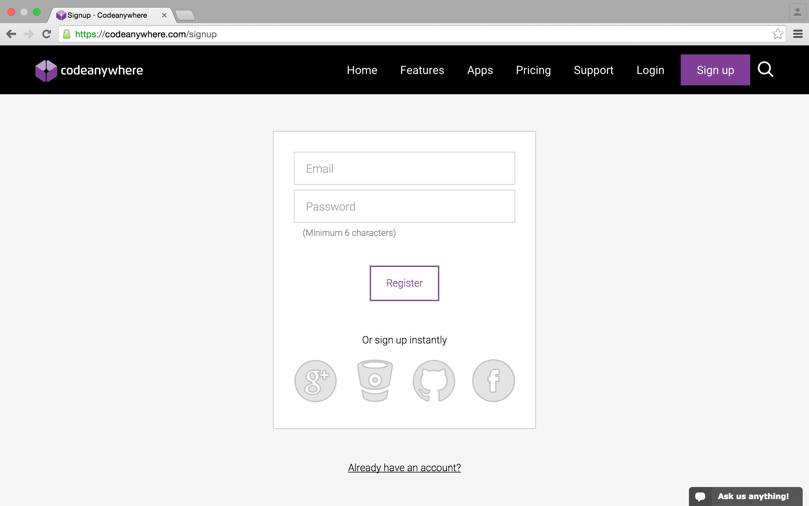
Starting up
For this tutorial, we’ll show you how to work with our Containers, although, you can set up your SSH/FTP server right away, or connect to Google Drive, Dropbox, Amazon S3, and even import your existing repository or create your DigitalOcean Droplet! Containers are in essence your own Virtual Private Servers which run invisibly in the background of Codeanywhere, each one with its own amount of RAM, Disk space and Processing power. Containers give you the ability to provision any Development Environment you like. You can even choose between one of the predefined stacks.
In order to start a new Container, go to File -> New Connections -> Container.
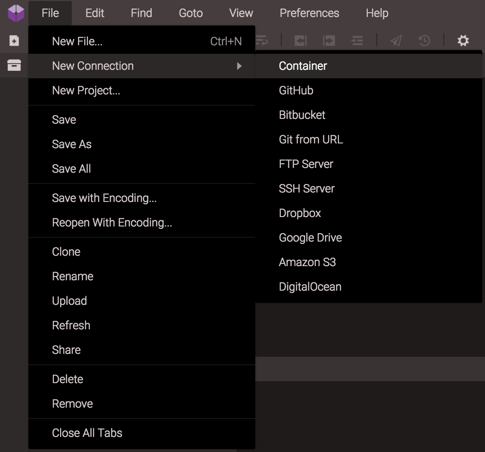
Now, you can choose which predefined stack you’d use. In this tutorial, we’ll create a simple PHP container. Choose which OS you’d like to use - Ubuntu or CentOS - and decide whether you’d like for your Container to be Always on - meaning it will be turned on even when you’re offline.
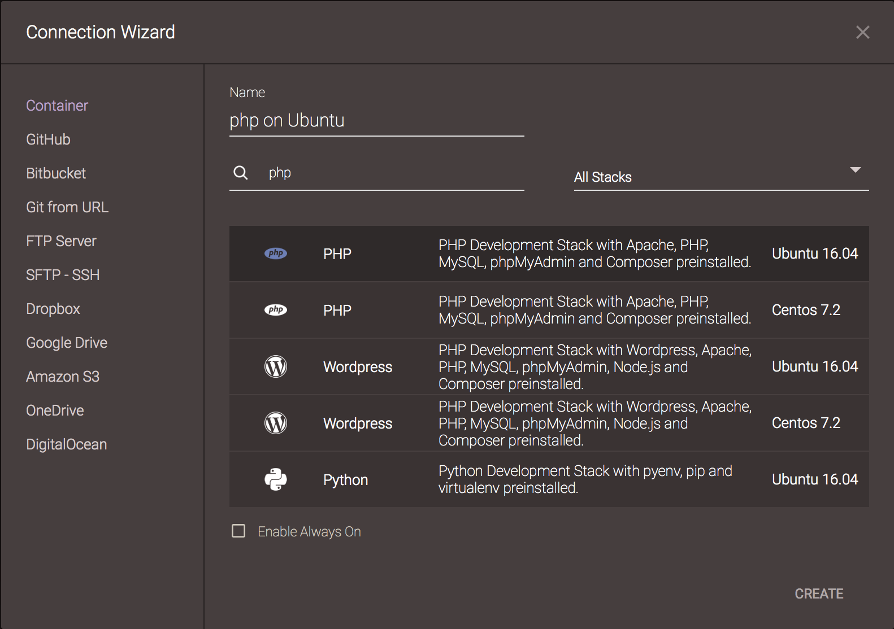
Wait for a few seconds until your Container is deployed, and you can start coding right away.
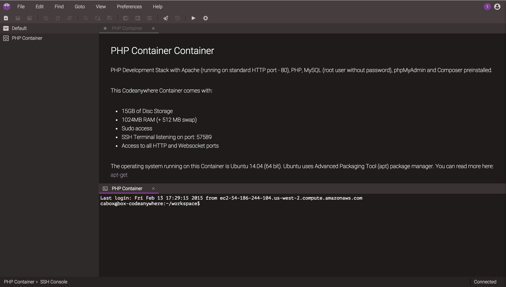
With a right click on your Container, choose to Create a File, and name it “index.php”.
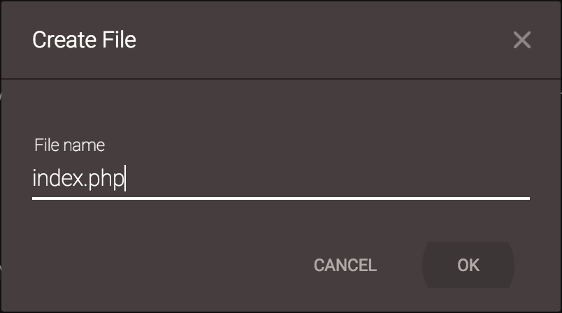
You can see in your file tree that your Container is already updated! Go to your file and enter some code - in this example we created a simple “Hello World” app.
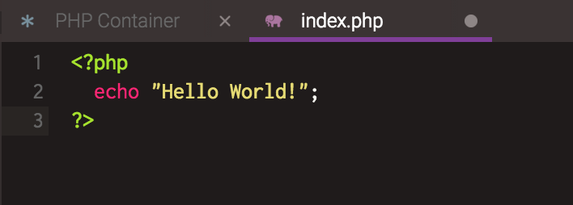
Save it (just like anywhere else with CMD + S, for Mac, or Ctrl + S, for Windows), and now, all you have to do is select “Run” button with a right click on your app:
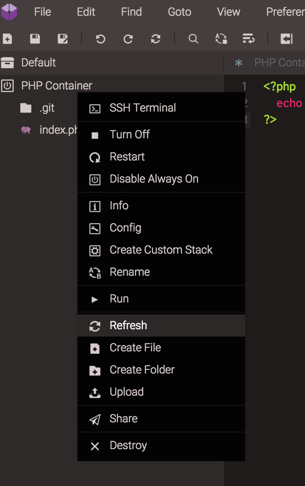
and you’ll be able to preview your new app!
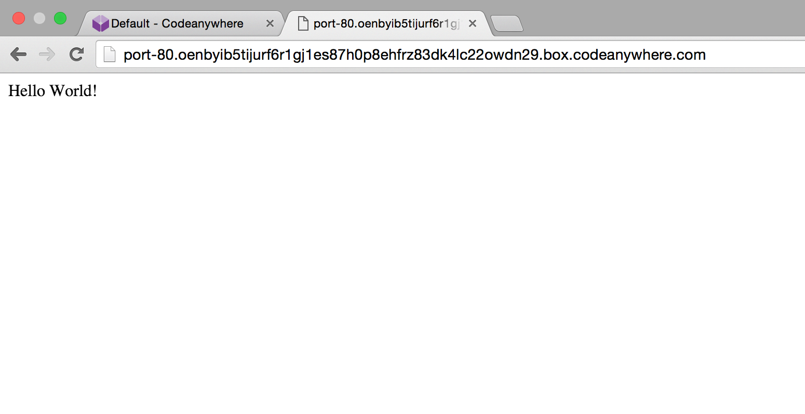
That’s about it!
You can now share your code or work with your colleagues in the same way you’d do that with Google Docs with our collaboration feature, and even share your terminal! If they make some changes you’re not happy with, use our Revisions feature, and get your code back to where you’d like! Sounds interesting? Read our online documentation and learn more about the rest of the cool features we have to offer! :)
FAQ
How can I preview my code?
You will need to copy your code into a Container. Containers are basically Virtual Machines and you can use them for all your coding. Each one with its own amount of RAM, Disk space and Processing power. Containers give you the ability to provision any Development Environment you like. You can even choose between one of the predefined stacks. Place your code in, right click and select Run and that's it! If you need a quick tutorial for setting this up, check here. You can also check here for more details on Containers!
How can I use Git with Codeanywhere?
Codeanywhere will create a Container for each repository and you will be able to edit your code directly from there. Then, you can push changes back to your repo using your SSH Terminal! Just check our Working with Repositories section for further instructions.
Why is working with FTP slower on Codeanywhere than with the FileZilla?
While working with FileZilla you are directly connected from local computer to your server, on the other hand the Codeanywhere is acting as a "middle man" between user and ftp - any action done by user is firstly processed at our server and then sent to the ftp. Same thing works in opposite direction, ftp sends response to Codeanywhere and then Codeanywhere forwards the response back to user. Also, the speed of the server response depends on the server location. If your server is located it America, the response will be faster, but if it's located in China it will be slower. We do however plan to expand our server coverage around the world for faster connections.
How can I connect to Local Server?
Codeanywhere uses its file services in the cloud that are used for making connections. Behind the scenes it looks something like this:
Codeanywhere Web or mobile app ---> Codeanywhere API ---> Codeanywhere File Service ---> Your Server
Your server is in your local network and the only way you could connect to your server from Codeanywhere is that you use port forwarding on your router to your local server. The other problem that could come in your case is your router's public IP. If your internet provider does not provide you a static IP, then you would also need to use some of DDNS services.
Why is my server not responding after I made few requests, but after an hour works fine again?
While performing actions using Codeanywhere, the requests are sent from our app to your server. Sometimes the number of requests cause your server to block the requests and add Codeanywhere to a blacklist. To avoid this you must make sure that your server is reachable from the following IP addresses:
- 65.52.184.164
- 51.141.5.180
- 52.161.27.120
- 54.187.136.143
- 54.187.142.118
- 54.187.182.165
- 54.187.44.75
If you have no administration rights on the server, please ask your administrator to whitelist these IP’s.
How to connect local machine to a Container via Putty?
Here are the complete instructions for connecting to your container with Putty:
To generate a set of RSA keys with PuTTYgen:
- Start the PuTTYgen utility, by double-clicking on its .exe file
- For Type of key to generate, select SSH-2 RSA
- In the Number of bits in a generated key field, specify either 2048 or 4096 (increasing the bits makes it harder to crack the key by brute-force methods)
- Click the Generate button
- Move your mouse pointer around in the blank area of the Key section, below the progress bar (to generate some randomness) until the progress bar is full
- A private/ public key pair has now been generated
- In the Key comment field, enter any comment you'd like, to help you identify this key pair, later (e.g. your e-mail address; home; office; etc.) -- the key comment is particularly useful in the event you end up creating more than one key pair
- Click the Save public key button & choose whatever filename you'd like (some users create a folder in their computer named my_keys)
- Click the Save private key button & choose whatever filename you'd like (you can save it in the same location as the public key, but it should be a location that only you can access and that you will NOT lose! If you lose your keys and have disabled username/password logins, you will no longer be able log in!)
- Right-click in the text field labeled Public key for pasting into OpenSSH authorized_keys file and choose Select All
- Right-click again in the same text field and choose Copy.
Container config:
- Log on to your container
- Run: vim ~/.ssh/authorized_keys
- Paste key in new line
- Save and exit
Putty config:
- Start PuTTY by double-clicking its executable file;
- PuTTY's initial window is the Session Category (navigate PuTTY's various categories, along the left-hand side of the window);
- In the Host Name field, enter the Container’s Host Name (hostXX.codeanyhost.com)
- Enter the port number in the Port field (see Container info)
- Select SSH under Protocol;
- Along the left-hand side of the window, select the Data sub-category, under Connection;
- Specify the username cabox in the Auto-login username field;
- Expand the SSH sub-category, under Connection;
- Highlight the Auth sub-category and click the Browse button, on the right-hand side of the PuTTY window;
- Browse your file system and select your previously-created private key;
- Return to the Session Category and enter a name for this profile in the Saved Sessions field
- Click the Save button for the Load, Save or Delete a stored session area.
- Click on the desired connection and then “connect”
How can I connect to the SSH of my Container (Linux and OSX)?
- Open your Terminal
- Type in ssh-keygen and you will create your public key
- Go to .ssh/id_rsa.pub and copy your entire key
- In Codeanywhere, in Container's SSH, use command: cat .ssh/id_rsa.pub
- Use command vim authorized_keys
- (type "A" or "I") paste your key in new line and Save (by pressing ESC, and entering :wq)
- Locate SSH port number in Container's Info
- Now in order to connect to your box, you have to use the following command to create a tunnel from your local machine to your Container:
ssh -p port cabox@hostXX.codeanyhost.com -i id_rsa
How to connect local MySQL to a Container?
After connecting to your local machine via Putty or Terminal, connect to your remote MySQL using: localhost:3306
How can I connect to a Container via FTP?
You can't connect via FTP but you can connect as SFTP. These are the credentials you'll need:
- Hostname: hostname of your container - looks something like hostXX.codeanyhost.com and you can check it in Container's Info with a right click on your Container
- User name: cabox
- As for the password, you can't connect this way. You'll need private key of your Container and you can get it by going to /home/cabox/.ssh/id_rsa and that's your private key which you can use for connecting to your Container.
- Also, you'll need to check your Port - right click on your Container, select Info, locate SSH Terminal listening on port, and that's the port you have to use for connecting to SFTP.
How can I find private and public key of my Container?
You can view Private Key of your container by going to cd /home/cabox/.ssh/ using your SSH terminal. There you will find:
- id_rsa - private key container of your container,
- id_rsa.pub - public key of your container.
Is it possible to deploy to Heroku?
Deploying with Heroku requires you to install Heroku toolbelt. You can install it using SSH command:
wget -O- https://toolbelt.heroku.com/install-ubuntu.sh | sh
Now you can use Heroku CLI. More detailed instruction can be found on official Heroku toolbelt website https://toolbelt.heroku.com/
Why doesn't my stack work on 127.0.0.1:port?
Some of our stacks will default the IP to the localhost: 127.0.0.1. You have to change the default IP so your Container could run externally. Please change IP address on your container from 127.0.0.1 to 0.0.0.0 so that you could be able to preview your Ruby box. You can do that inside Config - under commands - of your container (right click on your container and select Config).
For example, on Ruby stack, you just have to use the following command in order to run your Rails container: "rails s --binding=0.0.0.0" This will override localhost (127.0.0.1) where your app can't work. And now, you'll be able to view your Ruby app on: containername-username.codeanyapp.com:3000.
In a Wordpress stack, after uploading plug-ins, I receive an error and permission is denied. Why?
You can prevent these issues by running commands in SSH:
Ubuntu:
sudo chown cabox:www-data -R ~/workspace
CentOS:
sudo chown cabox:apache -R ~/workspace
Also, please download original plug-ins from Wordpress, so you don't receive this error again.
I receive the following error when trying to access Google Drive: Invalid token. What could cause this?
There seems to be something wrong with your long-term access token, so please try removing and adding your Drive account. If that does not work please try revoking access to Codeanywhere from your Google security page located at: https://www.google.com/settings/security and afterwards try to add it again.
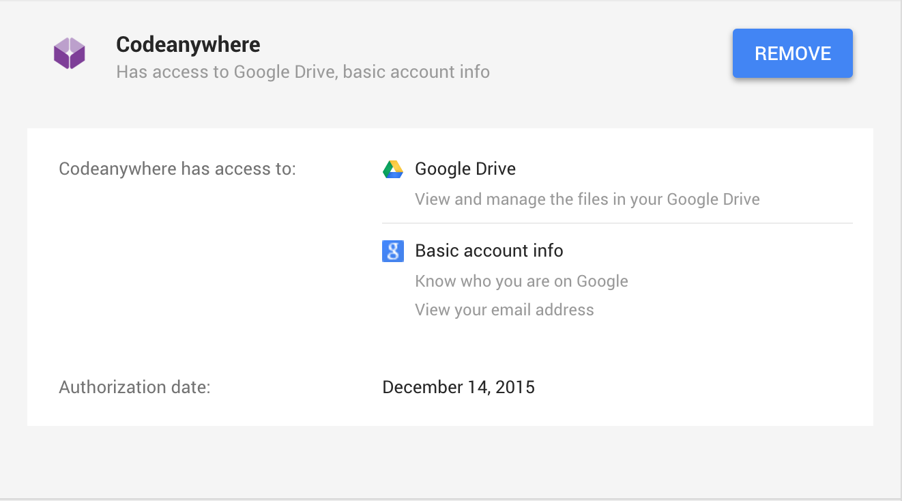
How can I change Preferences? All I get is a JSON file.
In our current version, it is possible to override settings from Preferences -> Default, inside Preferences -> User/Project.
For example, in Preferences -> Default -> General, you'll see it is set to:
"workspace": {
"theme": "monokai"
}
And now you can change it inside Preferences -> User/Project -> General, by adding code:
"workspace": {
"theme": "white"
}
And by doing this, you'll override settings from Default. We'll keep updating this so stick around!
How can I connect to Bitbucket via authorized_keys?
The recommended method is adding Codeanywhere SSH key to your Bitbucket account. That way, you can push commits to your private repo without password prompt. To do so, copy your Codeanywhere public key (you can find it by clicking your email in editor, then click "get your public key") and paste it to your bitbucket account (Account -> manage account -> SSH keys -> add Key)
Now your Codeanywhere account is authorized to make changes to your repo.
If you already have repository in Bitbucket, just by cloning your repository, your git will be setup. If you have existing project with empty Bitbucket git repository, you can add your repo with "git remote add origin {GIT_SSH_URL}". You can find your {GIT_SSH_URL} by clicking clone in bitbucket repo, then copying url next to 'git clone', its format is git@bitbucket.org:/username/repository.git
Now you have successfully setup your git.
I can't see organizations repositories. How can I setup this?
You have to explicitly allow Codeanywhere to access your organizations. You can do it in two ways:
During authorization process Click Grant / Request Access on organization which repositories you want to access through Codeanywhere 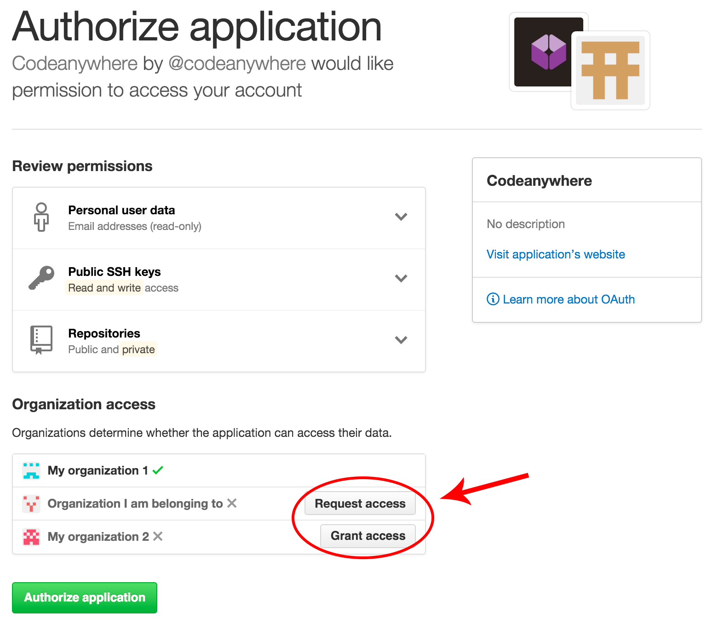
While logged in your GitHub account, click Account -> Settings -> Applications -> Codeanywhere Click Grant / Request Access on organization which repositories you want to access through Codeanywhere 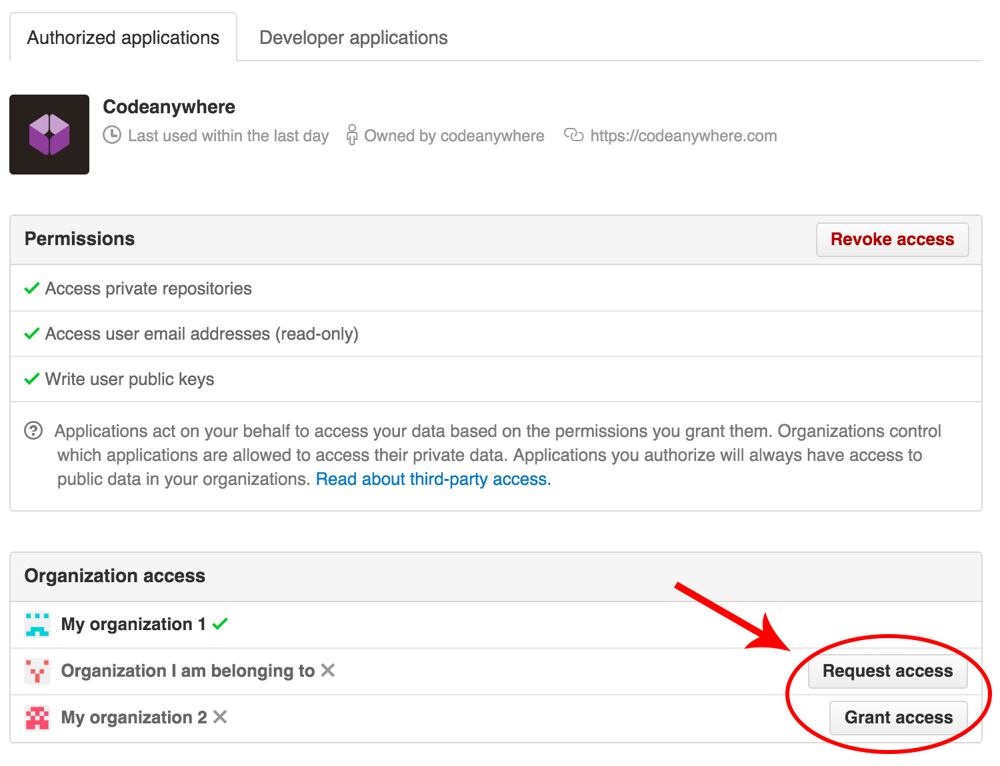
After allowing organization access, you can list your repositories through Codeanywhere.
How can I work with my repository with Codeanywhere
Connect to your repository via Github or Bitbucket directly or with Git From URL. You can push changes to your repository using standard git commands inside your SSH terminal:
git add -A // To track all files
git commit -am "message" // To commit changes
git push origin master // Push your local changes to repository
Codeanywhere Overview
Register/Login
To get started with Codeanywhere, just Register with an account or Login if you are already registered and go to our Editor!
Register
You can Register with Codeanywhere by selecting Sign Up on our Home page.
Now you can choose between multiple registration methods:
Entering your e-mail and password which will be used upon your future sign in * Using your Google Account * Using your Bitbucket account * Using your GitHub account * Using your Facebook account
In case you choose any of the oAuth methods, you'll have to authorize Codeanywhere for it to be able to access it again.
Login
You can log into your account if you already have an account. Simply choose between the method you used for registration and you'll be redirected to your Editor!
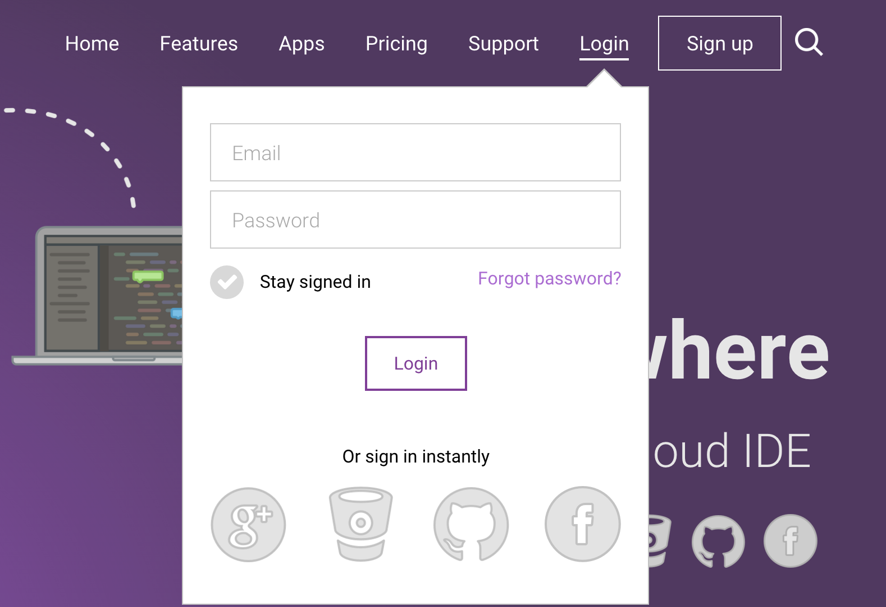
Forgot Password
If you forget your password, want to set an password for any of the oAuth methods, or have any problems while logging in to Codeanywhere you can use "Forgot password?" link to reset your password. It is located below login form:
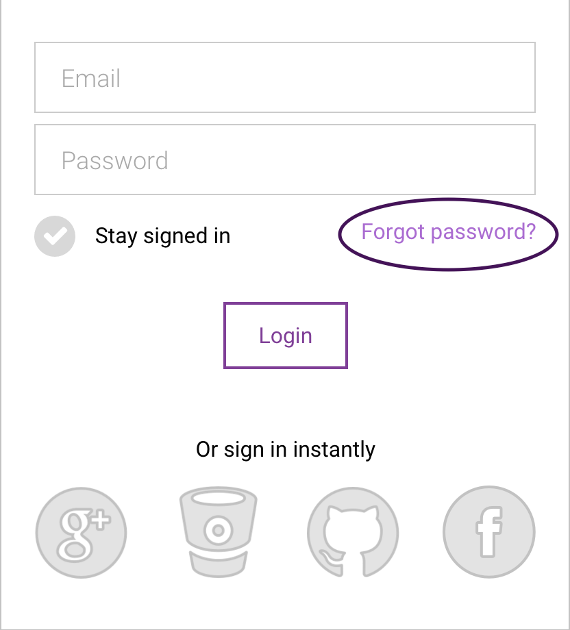
Once you receive email for your password reset, follow the link and enter the new password. After that you can use the new password and your email to login to your Codeanywhere account.
Codeanywhere UI
Codeanywhere contains features you'd expect from traditional desktop editors. Among these include:
- Save file option
- Undo and Redo support
- Cut, Copy, Paste, and Replace functionality
- Line manipulation, including:
- Indenting and outdenting
- Moving and copying lines up or down
- Removing lines from any point
- Splitting lines
- Highlighting and commenting blocks of code
- Revisions
- Code folding (including the entire file)
- Converting cases
- Autocompletion
- Code analysis
- Search in files with regular expressions
- Line wrapping, to a defined column or the width of the browser window
- Support for spaces and real tabs
Codeanywhere can be thought of as being divided into the following components:
- The top menu bar is the uppermost area, with easy access to a variety of menus
- The file explorer on the left lets you manipulate various aspects of your project, including its active files, preferences, and choices for deployment. It also displays views according to what's been selected in the file explorer
- The editor is the main area where you write your code
- Terminal allows you to SSH directly from your browser
- The status bar is the bottom area of the window. It shows all sorts of information about your code
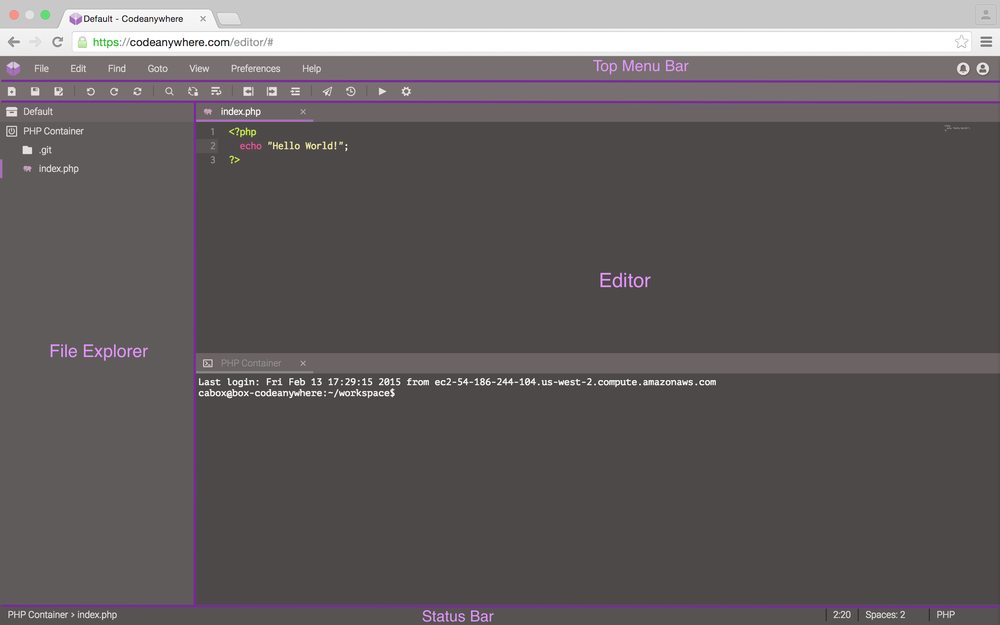
The Top Menu Bar
In this section, you can find the usual menus for creating, opening and saving files, changing your view, and switching between windows.
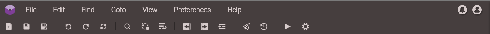 Under the "Help" menu, there is a Change log button which will direct you to all the recent changes, link to our Documentation, Send Feedback button where you can send your comments and feedbacks about Codeanywhere, as well as link to our Terms of Service and Privacy Policy.
Notifications will show you all the changes made – once you create new file, share a file, or upload one, ect. On the far right you can see a Profile button.
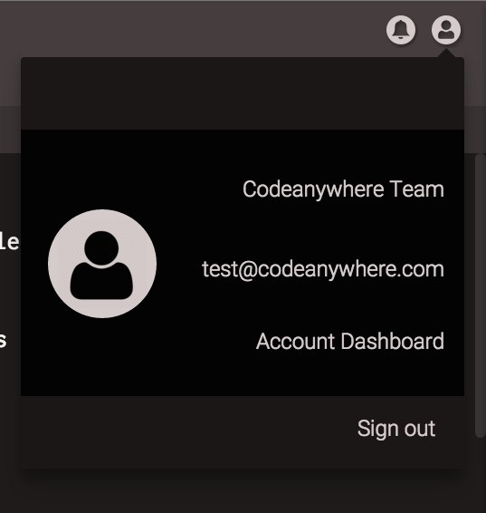
It allows you to go to your Dashboard - where you can view your subscriptions, projects and shares, change your password or delete your account - or to log off from the Editor, returning you to the Codeanywhere homepage.
File Explorer
The File Explorer is located on the left side of the Codeanywhere Editor. Inside of the File Explorer you can find all the connections you've made with files and folders linked with them within one Project. With a right click on your Project you'll can choose if you'd like to switch an Project, share your entire Project with other users, add a new one, manage existing ones (this will redirect you to your Dashboard), add new connection within a Project, or just refresh your current Project.
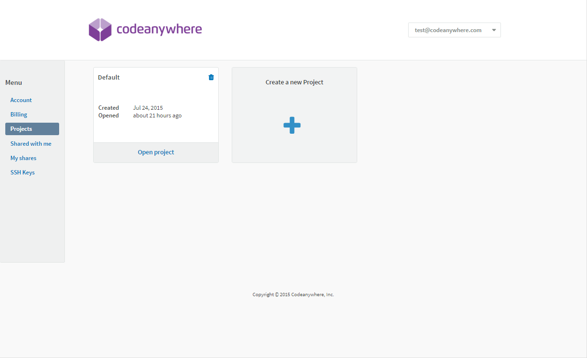
Each of the connections you can make is explained below:
- Container - your own Virtual Private Servers with its own amount of RAM, Disk space and Processing power – * contains a list of folders and files within your Container
- GitHub – a container with your GitHub repository
- Bitbucket – container with your Bitbucket repository
- Git from URL - container with your repository
- FTP – contains a FTP/FTPS servers
- SSH – contains a SSH/SFTP servers
- Google Drive – shows the list of folders and files on your Google Drive account
- Dropbox – shows the list of folders and files on your Dropbox account
- Amazon S3 – shows the list of folders and files on your S3 account
- DigitalOcean - a Droplet from DigitalOcean
Clicking on any connection or folder expands its menu. Clicking on an expanded button causes it to collapse, which gives you more room in the File Explorer to work with.
Right-click on any file/folder in File Explorer opens a drop-down menu that provides a list of options that can be performed. For a container, you can choose whether you'd like to run it, edit Config file, ect.
The Code Editor
The editor is the most important element of Codeanywhere and that's why we use CodeMirror. CodeMirror is a high-performance code editor for the web that supports syntax highlighting for over 100 different languages, and can still work faithfully on large documents. This is where most of the action happens. Every file you open appears as a tab on top of the Editor. You can open file easily by clicking on any file located in your File Explorer (or with a double click – depending on your preferences, you can set this up in View -> Enable Double Click).
If you want to create a new folder, right click on the connection, then choose Create folder from the expanded drop down menu. In order to create a file, also right click on a connection/folder where you'd like to create it and just enter a filename or you can double click anywhere in top editor bar. To create a specific file type, just enter the file extension (like .html, .css, .php, .js, ...) at the end of file name when creating new file (entering index.php will create an php file – it's that easy!).
Codeanywhere offers syntax highlighting for over 100 programming languages.
The code editor supports a large number of keyboard shortcuts to increase your productivity. For an up-to-date list of these within the Editor, simply go to Preferences and depending on Default, Project or User select Key bindings where you can change them.
Terminal
With Codeanywhere you get your own Terminal/Command Prompt in the cloud. This allows you to SSH directly from your browser to a different server or compile your code all without leaving your browser. Terminal can be used to run any command on your Container or remote servers. Simply right click on your connection with SSH access and select SSH terminal.
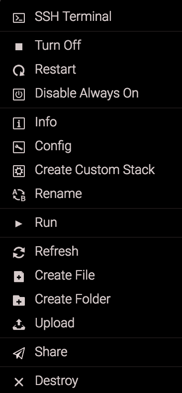
Also, with our entirely new feature, you can collaborate directly in your terminal. Select that connection and press share in top menu bar afterwards.
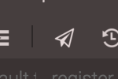
Please keep in mind that your SSH should be open. Your collaborator will receive a notification in top right corner that says: "user@mail.com has requested SSH terminal session collaboration on connection name_of_connection with you".
Use direct port access to get to Codeanywhere’s Containers via any SSH terminal or SFTP client.
How to connect local machine to a Container via Putty?
Here are the complete instructions for connecting to your container with Putty:
To generate a set of RSA keys with PuTTYgen: 1. Start the PuTTYgen utility, by double-clicking on its .exe file 2. For Type of key to generate, select SSH-2 RSA 3. In the Number of bits in a generated key field, specify either 2048 or 4096 (increasing the bits makes it harder to crack the key by brute-force methods) 4. Click the Generate button 5. Move your mouse pointer around in the blank area of the Key section, below the progress bar (to generate some randomness) until the progress bar is full 6. A private/ public key pair has now been generated 7. In the Key comment field, enter any comment you'd like, to help you identify this key pair, later (e.g. your e-mail address; home; office; etc.) -- the key comment is particularly useful in the event you end up creating more than one key pair 8. Click the Save public key button & choose whatever filename you'd like (some users create a folder in their computer named my_keys) 9. Click the Save private key button & choose whatever filename you'd like (you can save it in the same location as the public key, but it should be a location that only you can access and that you will NOT lose! If you lose your keys and have disabled username/password logins, you will no longer be able log in!) 10. Right-click in the text field labeled Public key for pasting into OpenSSH authorized_keys file and choose Select All 11. Right-click again in the same text field and choose Copy.
Container config: 1. Log on to your container 2. Run: vim ~/.ssh/authorized_keys 3. Paste key in new line 4. Save and exit
Putty config: 1. Start PuTTY by double-clicking its executable file; 2. PuTTY's initial window is the Session Category (navigate PuTTY's various categories, along the left-hand side of the window); 3. In the Host Name field, enter the Container’s hostname (hostXX.codeanyhost.com) 4. Enter the port number in the Port field (see Container info) 5. Select SSH under Protocol; 6. Along the left-hand side of the window, select the Data sub-category, under Connection; 7. Specify the username cabox in the Auto-login username field; 8. Expand the SSH sub-category, under Connection; 9. Highlight the Auth sub-category and click the Browse button, on the right-hand side of the PuTTY window; 10. Browse your file system and select your previously-created private key; 11. Return to the Session Category and enter a name for this profile in the Saved Sessions field 12. Click the Save button for the Load, Save or Delete a stored session area. 13. Click on the desired connection and then “connect”
How can I connect to the SSH of my Container (Linux and OSX)?
- open your Terminal
- type in ssh-keygen and you will create your public key
- go to .ssh/id_rsa.pub and copy your entire key
- In Codeanywhere, in Container's SSH, use command: cat .ssh/id_rsa.pub
- use command vim authorized_keys
- (type "A" or "I") paste your key in new line and Save (by pressing ESC, and entering :wq)
- Check your container's /etc/ssh/sshd_config file to have 'RSAAuthentication' and 'PubkeyAuthentication' set to 'yes'
- In case you update sshd_config file remember to restart ssh service with 'sudo service ssh restart'
- Locate SSH port number in Container's Info
Now in order to connect to your box, you have to use the following command to create a tunnel from your local machine to your Container:
sh ssh -p port cabox@hostXX.codeanyhost.com -i id_rsa.pub
Status Bar
The status bar is designed to provide you with information about your code and additional functionality without getting in the way of the Editor. You can find the status bar in the lower part of the editor:
There are four pieces of information available: - Position of the file which is currently opened - your current row and column on the left side, which lets you know where exactly is your cursor currently placed in the code. If you click on current row, you'll be prompted to enter a line where you'd like to go. - Tab size let's you select your indentation - you can also change this in General Preferences - Top right corner detects code in the file and displays it to the user. In this way user can immediately know which programming language is being used on that file for that extension - you can also change this in FileTypes Preferences.
Dashboard
You can access your Dashboard from inside your Editor – just go to top menu bar and in right corner select Profile Button
Or you can go directly to https://codeanywhere.com/dashboard.
Here, you can take care of all your Account details – manage your password, connect to various networks (GitHub, Bitbucket, Google or Facebook), and Delete your Account.
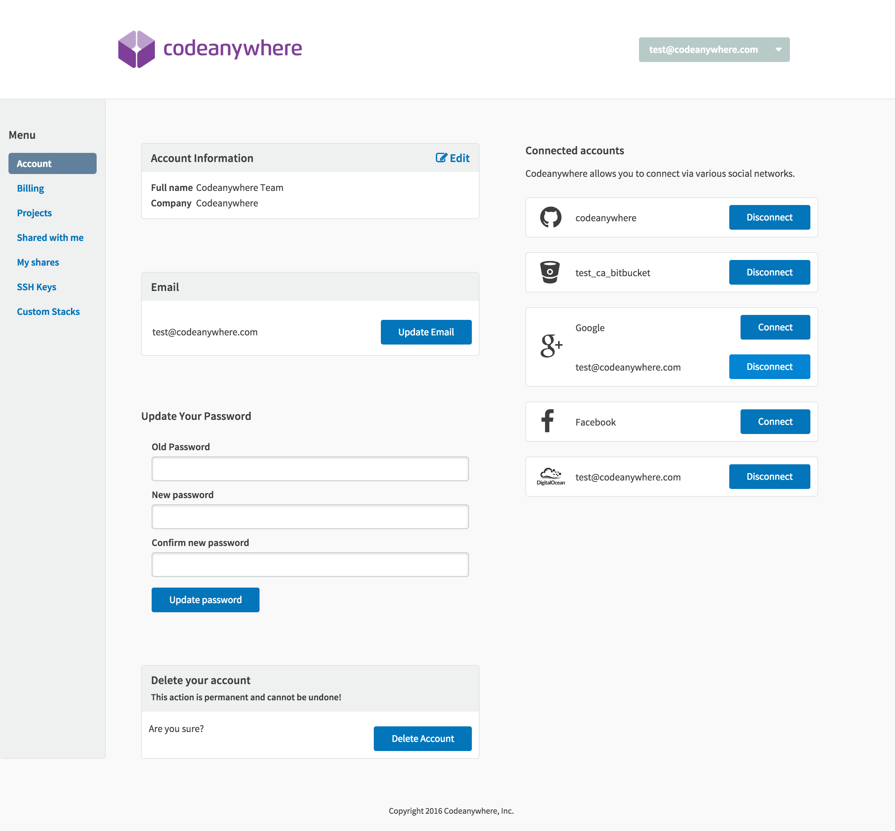
Under Billing, you can manage your subscriptions and purchase add-ons, check out your invoices and billing info. Also, as a security measure, here you can activate 2FA (for Freelancer Plan and higher).
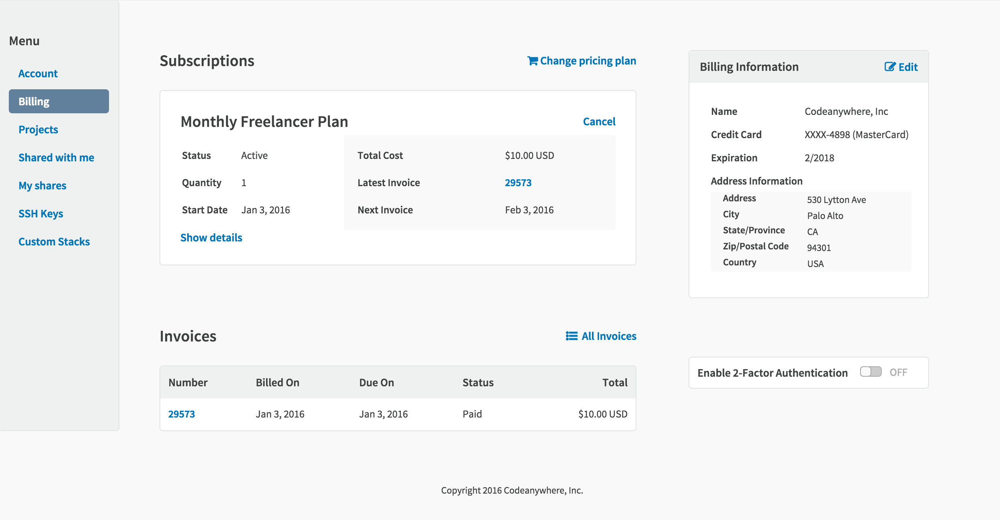
Projects let you organize your work and using Dashboard you can access all of them, add new ones or delete old ones!
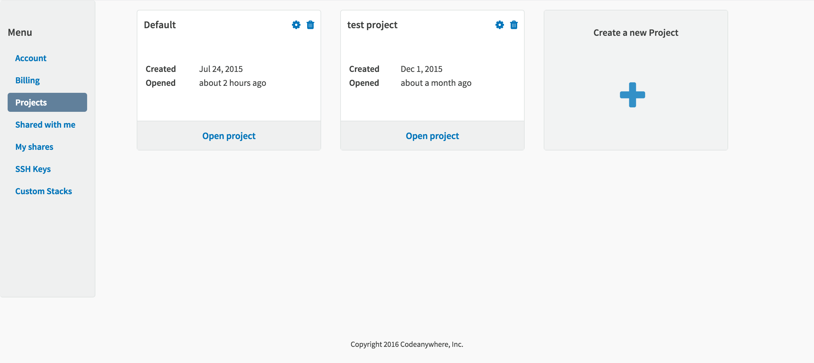
With our share feature you can work on a code with other Codeanywhere users. Now, you can access all your shares from your Dashboard – Shared with me will show you all the shares you've received!
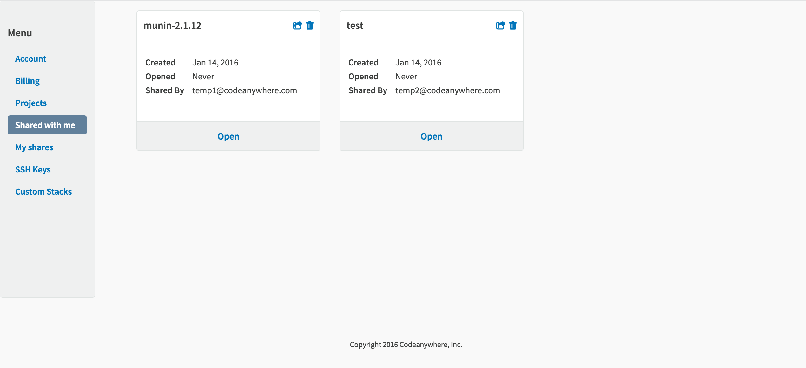
In My shares, you can see all the shares you have made!
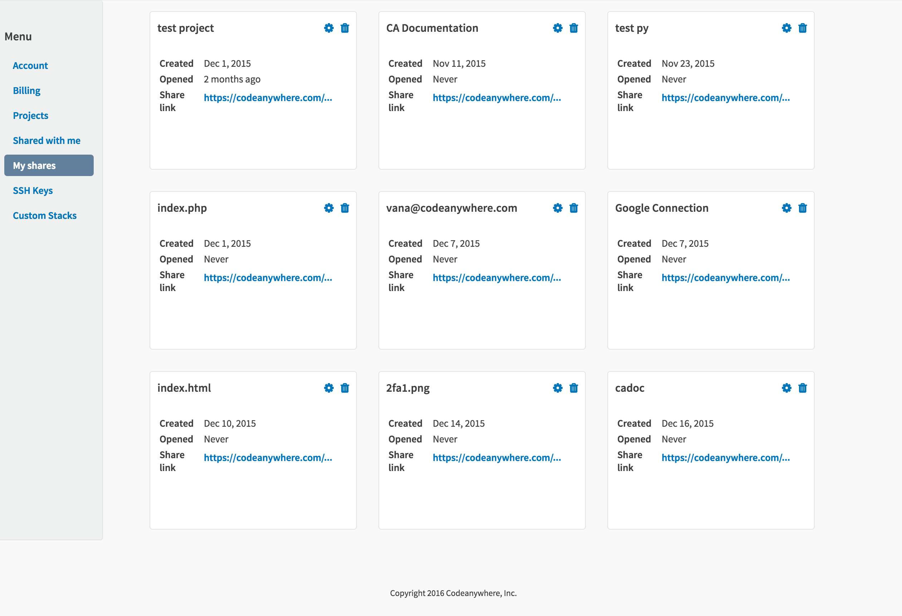
Every Codeanywhere user has its own Public key and you can check yours by clicking in SSH keys. It can be used for secure communication with your server!
Under Custom Stacks, you can check all the Custom Stacks you've created inside your Editor!
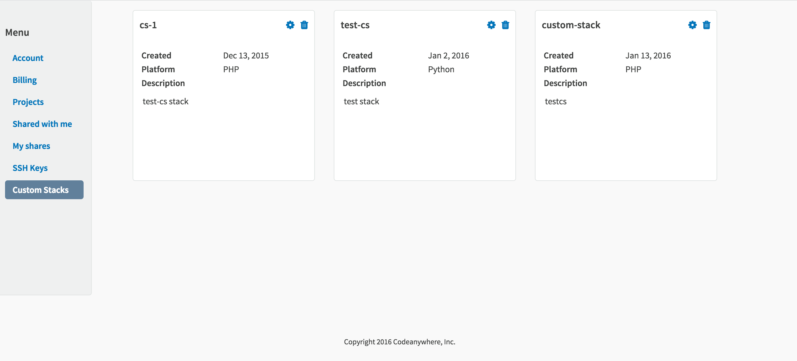
Projects
The Project feature allows you to organize your work into separate projects and easily switch between them without having to reload or use separate tabs. You can create as many projects as you want! In order to view all your projects, go to your Dashboard under section Projects. Here you can open specific project, edit them, or delete. When inside your Editor, just right click on your Project if you want to switch to a different one.
Here, you can also create a new one, change Config of your Project, Share a Project or Manage them - this will redirect you to your Dashboard.
Connections
Container
Containers are like your own Virtual Private Servers (in essence they are OpenVZ OS containers) provisioned by Codeanywhere, each one with its own amount of RAM, Disk space and Processing power (just like any normal VPS but with some limitations such as lack of a dedicated IP address). Containers give you the ability to provision any Development Environment you like. You can choose between one of the predefined stacks:
- Default – Blank Development Container
- PHP – LAMP Development Stack with phpMyAdmin and Composer preinstalled
- NodeJS – NodeJS Development Stack with npm and yarn preinstalled
- Ruby – Ruby Development Stack with RVM and Ruby on Rails preinstalled
- Python – Python Development Stack with pyenv, pip and virtualenv preinstalled
- C/C++ – C/C++ Development Stack with gcc and g++ compiler and gdb preinstalled
- HTML – HTML5 Development Stack with Apache, Node.js and npm preinstalled
- Wordpress – LAMP Development Stack with Wordpress, phpMyAdmin and Composer preinstalled
- Java – Java Development Stack with OpenJDK7, OpenJDE7 and Tomcat7 preinstalled
- .NET Core – .NET Core Development Stack
You won't even be aware of it being created or started. You can choose between two operating systems: Ubuntu 16.04 and CentOS 7.2.
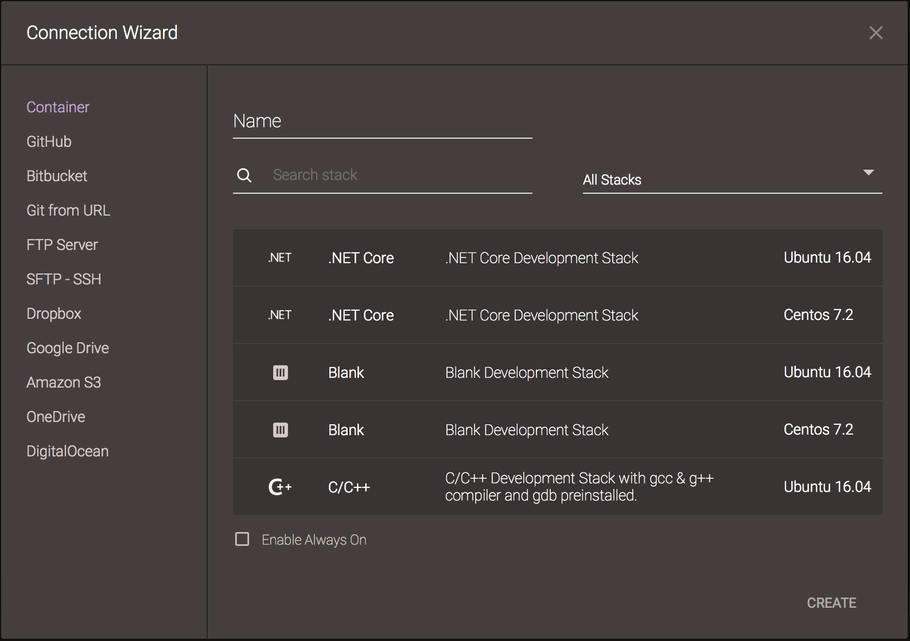
Also, if you require any development environment you can't find in our list, you can create a container from a Blank stack and install anything you want and you can find some popular stacks installation steps in our Advanced Topics section. Afterwards, just save it as a Custom Stack and you can use it again and again! The best part of Containers is that not only does it remove issue of having your development environment wherever you are; it also enables you to connect to any GIT repository in the world, be it a corporate server or popular services like GitHub or Bitbucket. With Containers you can now finally connect to your repositories and use its full capabilities, so now you can use commit to repositories from Codeanywhere!
Create a new Container by going to File -> New Connection -> Container
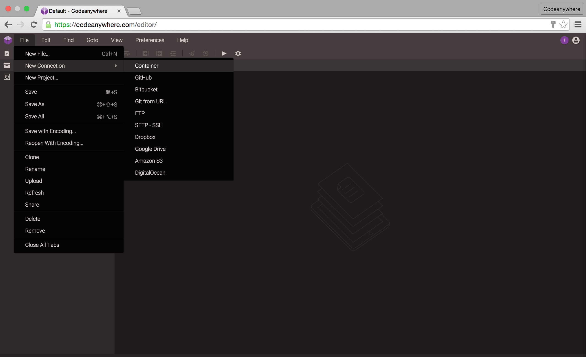
Choose your environment, name it and click Create!
Manage Container
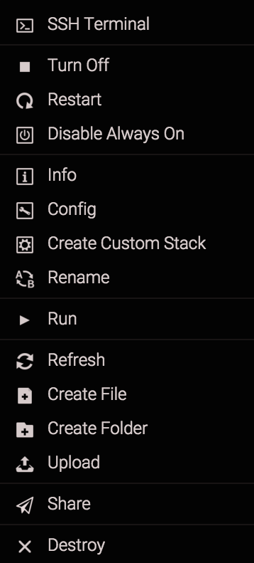
With Container get SSH access to your Container and you can use all the necessary actions such as git commands, installation of new depencencies ect! You can Turn Off or Turn On your Box, restart it or set it to be Always On so you can access your Box at anytime, without the need of logging into your account and starting it. With containers, you can view your code with your preview link. You can check your preview link inside Info.
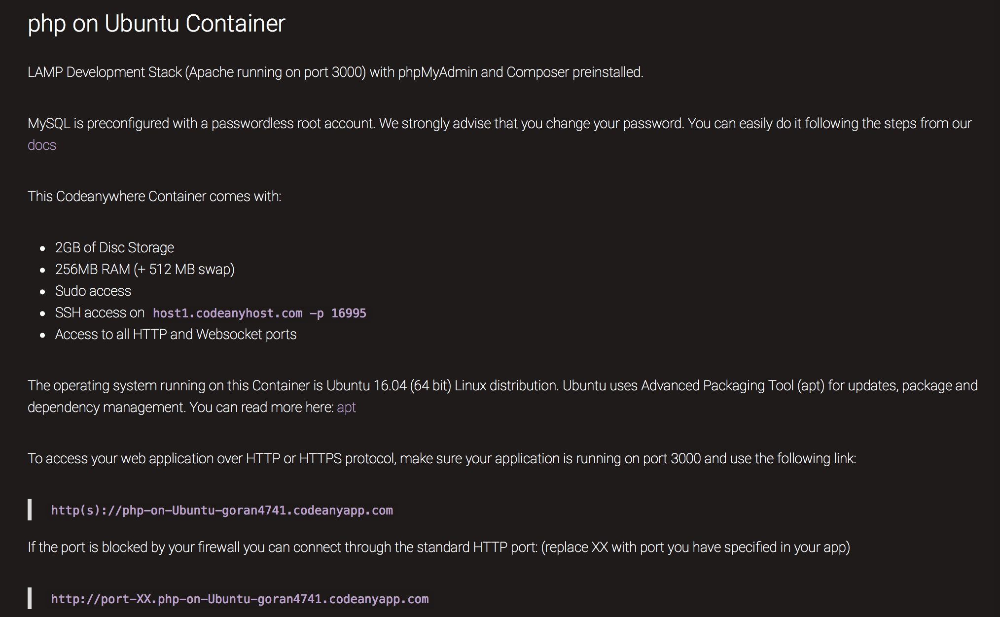
Be sure to replace the XX with the port you have specified in your app.
In Config, you can set up commands necessary for your Stack to Run. Custom Stack can be created out of any Container! If you installed anything using your terminal, just save it as a Custom Stack and use it again and again. This way, you don't have to lose anytime for creating your development environment all over again!
By selecting Run, your preview link will be opened and any command neccessary to run your app, opened in SSH terminal.
Create any file, by entering filename.extension, or folder inside your container, Upload files directly from your local storage or Share your entire Container!
In case you want to delete your entire Container, just click Destroy. However, keep in mind that your work will be removed and you wont be able to retrieve it afterwards!
Creating a Custom Stack
In order to create a Custom Stack of one of your Stacks, first, you'll have to right click on your Container and select Create Custom Stacks
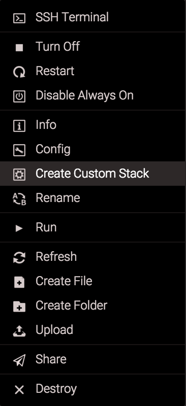
Enter your File name and Description so you could find it easier later on!
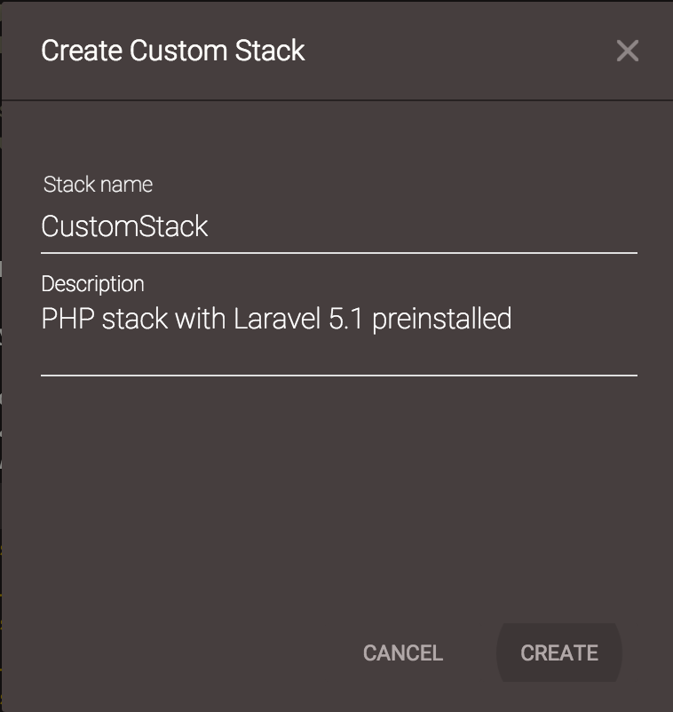
You can access all your Custom Stacks in your Dashboard.
Deploy to Heroku
Deploying with Heroku requires you to install Heroku toolbelt. You can install it using SSH command:
wget -O- https://toolbelt.heroku.com/install-ubuntu.sh | sh
Now you can use Heroku CLI. More detailed instruction can be found on official Heroku toolbelt website https://toolbelt.heroku.com/
Locate Private and Public
You can view Keys of your container by going to cd /home/cabox/.ssh/ using your SSH terminal. There you will find:
- id_rsa - private key container of your container,
- id_rsa.pub - public key of your container.
Connect your Container via SSH
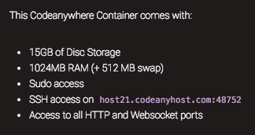
These are the credentials you'll need:
- Hostname and port: check it in Container's Info with a right click on your Container, select Info, locate SSH access, and that's the hostname and port you have to use.
- User name: cabox
- As for the password, you can't connect this way. You'll need private key of your Container and you can get it by going to /home/cabox/.ssh/id_rsa and that's your private key which you can use for connecting to your Container.
Containers are available to all users, just login and try it out!
Container Configuration
Right click on your Container and you will see your dropdown menu:
With Container get SSH access to your Container and you can use all the necessary actions such as git commands, installation of new depencencies ect! You can Turn Off or Turn On your Box, restart it or set it to be Always On so you can access your Box at anytime, without the need of logging into your account and starting it.
With containers, you can view your code with your preview link. You can check your preview link inside Info.
You can use your preview link or, if you want to used the one with specified port, be sure to replace the XX with the port you have specified in your app. Also, you can add ":port_number" at the end of your preview link.
In Config, you can set up commands necessary for your Stack to Run.
Let's say, you have an app inside your workspace folder /path/to/folder/. By default current working dir is set to be /workspace/. By changing "cwd": "~/workspace" to "cwd": "~/workspace/path/to/folder", you can set the file path which will be used upon running your app.
cwd (curent working directory) is the location in which your run commands should be located. The default location is ~/workspace, if your commands are located in a subdirectory named "test” then cwd should be ~/workspace/test.
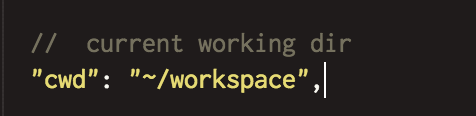
NOTE: containers hosting content via Apache (example: html, php) expect that content to be located at ~/workspace, if you keep your content in another directory you should edit or create the ~/workspace/.htaccess file to point at that directory.
Inside "commands" you can set any commands necesary for running your container.
In "commands": [], set command neccessary for running your app, such as: "grunt", "ember server", "rails server" ect, depending on your app.
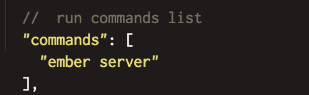
If you changed port in your app, to listen to the port defined in your Config file, under "environment", feel free to set new port number which will use your app.
By selecting Run, your preview link will be opened and any command neccessary to run your app, opened in SSH terminal.
Running on Localhost
Some of our stacks will default the IP to the localhost: 127.0.0.1. You have to change the default IP so your Container could run externally. Please change IP address on your container from 127.0.0.1 to 0.0.0.0 so that you could be able to preview your Ruby box. You can do that inside Config - under commands - of your container (right click on your container and select Config).
For example, on Ruby stack, you just have to use the following command in order to run your Rails container: "rails s --binding=0.0.0.0" This will override localhost (127.0.0.1) where your app can't work. And now, you'll be able to view your Ruby app on: preview.xxxxxx.box.codeanywhere.com:3000.
Locate Private and Public
You can view Keys of your container by going to cd /home/cabox/.ssh/ using your SSH terminal. There you will find:
- id_rsa - private key container of your container,
- id_rsa.pub - public key of your container.
PHPMyAdmin
PhpMyAdmin comes preinstalled with our Containers (both CentOS and Ubuntu). To access it first open the info by right-clicking the Container in File Explorer:
At the top of your Info page, you can see your Username and Password. Copy the link into the new tab of your browser and add „/phpmyadmin“ at the end of the link to access phpMyAdmin – it will look something like: http://preview.xxxxxx.box.codeanywhere.com/phpmyadmin or, in this example, http://port-80.xxxxxx.box.codeanywhere.com/phpmyadmin. For login use the "root" as Username, and leave the Password field empty:
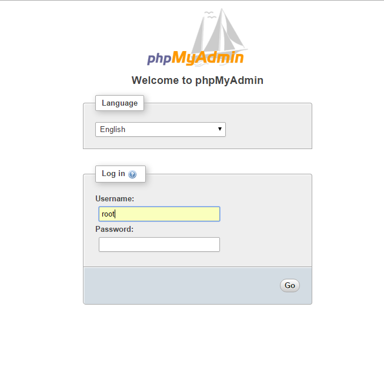
Username and password will vary depending on the Stack you choose! You can check it in your Info file in first line.
If you want to be able to access your Container at all times, you can activate our feature Always-on, which will keep your Container running even when you're not using Codeanywhere!
Setting Custom Domain
Once you've created a container, you will probably want to preview it in your own link! Now, you can set your custom domain using our Dashboard!
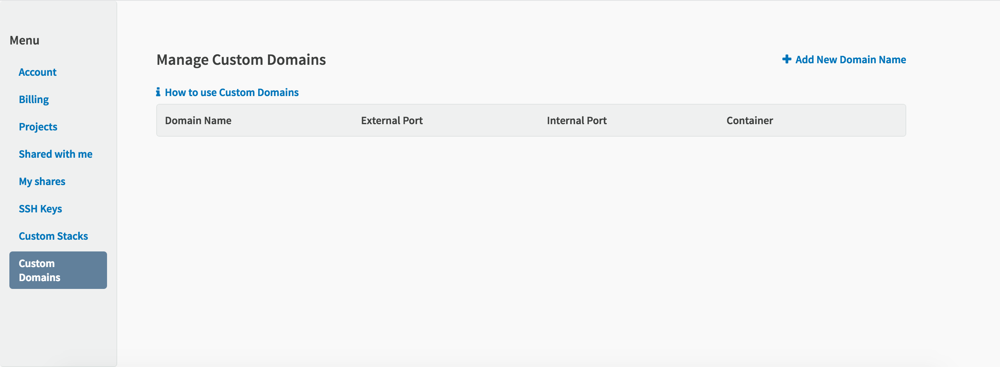
CNAME Records
Before you start configuring your domain in Codeanywhere, there is one step you should do first and that is to go to your domain register (GoDaddy and similar) and create a CNAME record.
The CNAME record you create must point to our proxy server: sfo.codeanyproxy.com
For more information on CNAMEs and how they work, please visit the Google Support Guide for CNAME records.
In your dashboard, select "Add New Domain Name".
Add your Custom Domain
Add External Port to 80, 443 or port in range of 1024 and 9999. Set the Internal Port to the port your application server is listening to. For example, if you set your Internal Port to 8000 and External Port to 80, you can access your custom domain without appending :8000 at the URL.
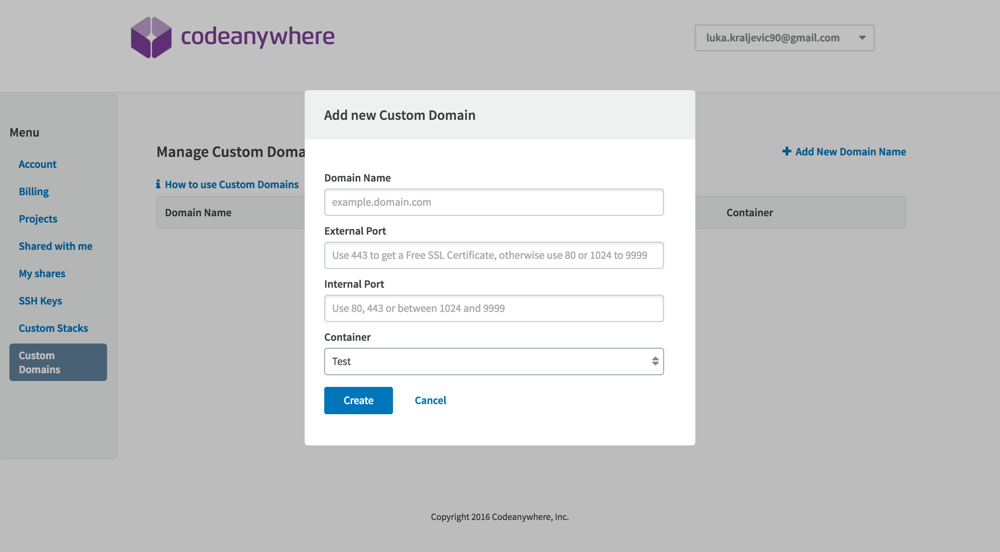
If you set the External port to 443, Codeanywhere will automatically set up a free SSL certificate provided by Let's Encrypt! It is important that you have already configured your CNAME record to point to Codeanywhere proxy server so the certificate can be issued.
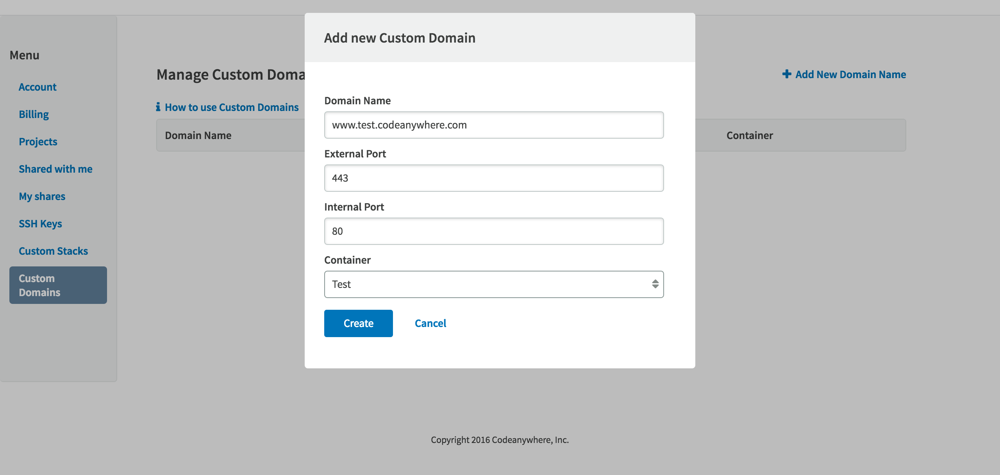
Click on Create and that's it! Now you can access your Container from your domain! Custom domains do not prevent container to be turned off in case it does not have AlwaysOn feature enabled.
GitHub
With Codeanywhere, you’ll be able to work directly with your GitHub repositories. Codeanywhere will create a Container for each repository and you will be able to edit your code directly from there. Containers are in essence your own Virtual Private Servers run invisibly in the background of Codeanywhere, each one with its own amount of RAM, Disk space and Processing power. DevBoxes give you the ability to provision any Development Environment you like or you can select between the number of our predefined stacks! You won't even be aware of it being created or started. After your repositroy is imported, you can edit and preview your code. Then, you can push changes back to your repo using your SSH Terminal! Just check our Working with Repositories section for further instructions.
Creating an GitHub Container
Go to File -> New Connection -> GitHub.
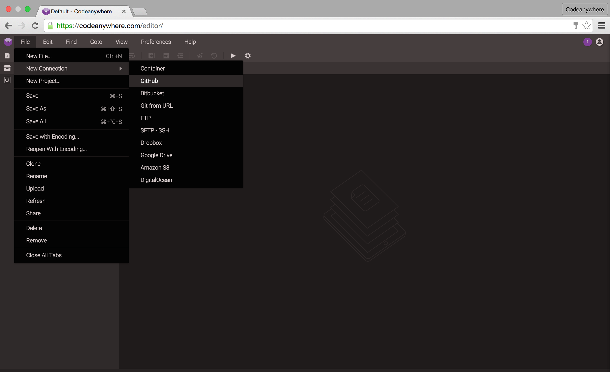
After selecting it, Add GitHub Access window appears. Click on "Connect your GitHub Account" in order to proceed.
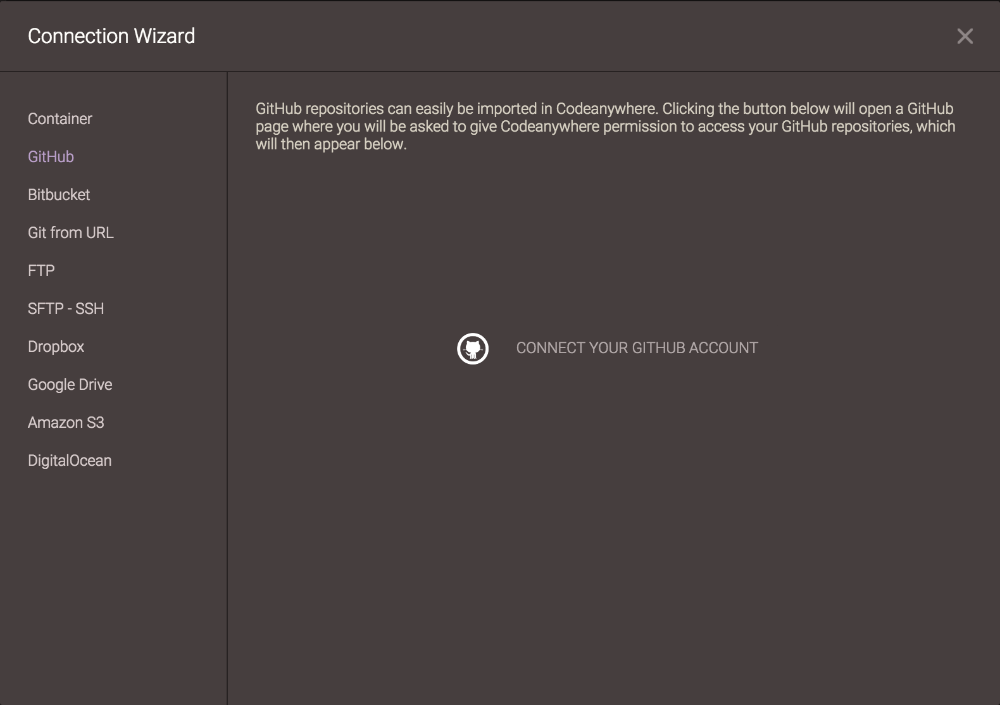
Enter your GitHub account details to connect to your GitHub account and authorize Codeanywhere for quick and easy access.
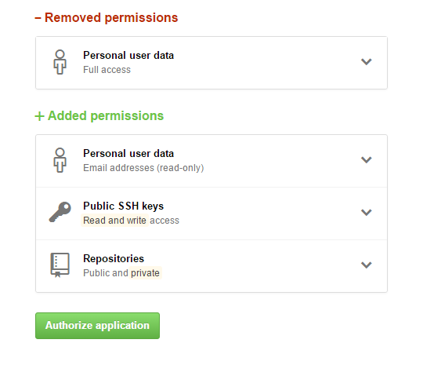
You’ll be prompted which repository you want to connect to.
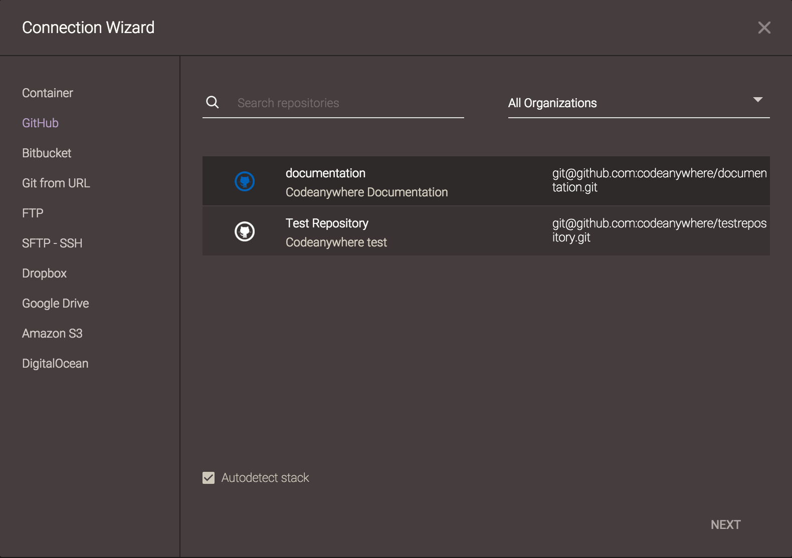
Just select repository you want to access, setup your development environment, or let our system decide for you!
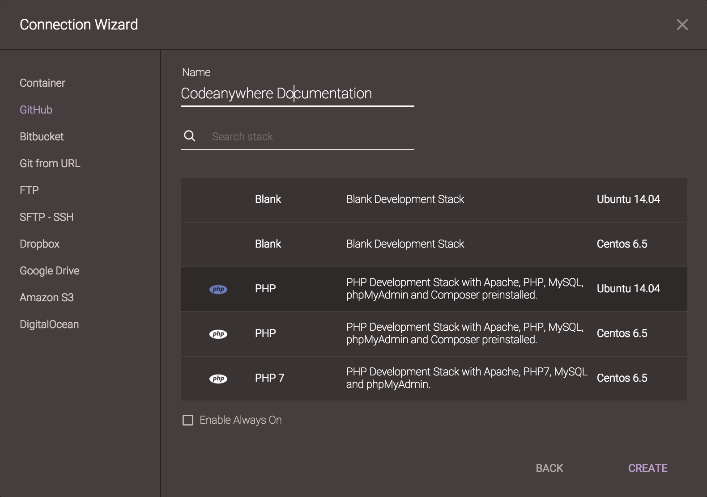
Now you’ve created a new Container with your repository!
Once you have got the repo in Codeanywhere, you can work on it from anywhere. You'll be able to edit your files, or run projects within Codeanywhere!
Accessing GitHub Organizations
You have to explicitly allow Codeanywhere to access your organizations. You can do it in two ways:
- During authorization process Click Grant / Request Access on organization which repositories you want to access through Codeanywhere
- While logged in your GitHub account, click Account -> Settings -> Applications -> Codeanywhere Click Grant / Request Access on organization which repositories you want to access through Codeanywhere
After allowing organization access, you can list your repositories through Codeanywhere.
Working with repositories
You can push changes to Github using standard git commands inside your SSH terminal:
git add -A // To track all files
git commit -am "message" // To commit changes
git push origin master // Push your local changes to github
BitBucket
With Codeanywhere, you’ll be able to work directly with your Bitbucket repositories. Codeanywhere will create a Container for each repository and you will be able to edit your code directly from there. Containers are in essence your own Virtual Private Servers run invisibly in the background of Codeanywhere, each one with its own amount of RAM, Disk space and Processing power. DevBoxes give you the ability to provision any Development Environment you like or you can select between the number of our predefined stacks! You won't even be aware of it being created or started. After your repositroy is imported, you can edit and preview your code. Then, you can push changes back to your repo using your SSH Terminal! Just check our Working with Repositories section for further instructions.
Creating an Bitbucket Container
Go to File -> New Connection -> Bitbucket:
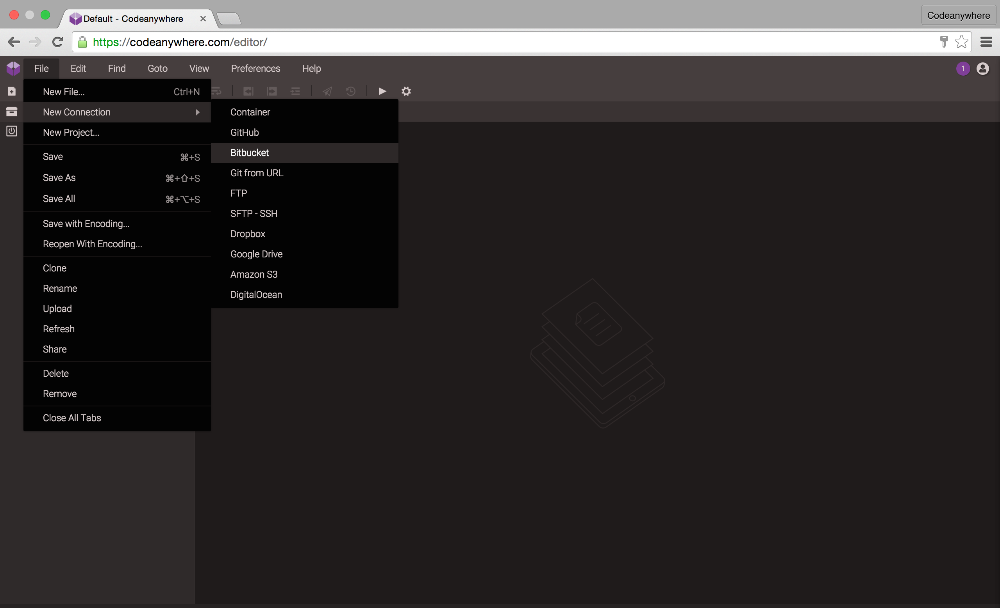
After selecting it, Add Bitbucket Access window appears. Click on "Connect your Bitbucket Account" in order to proceed.
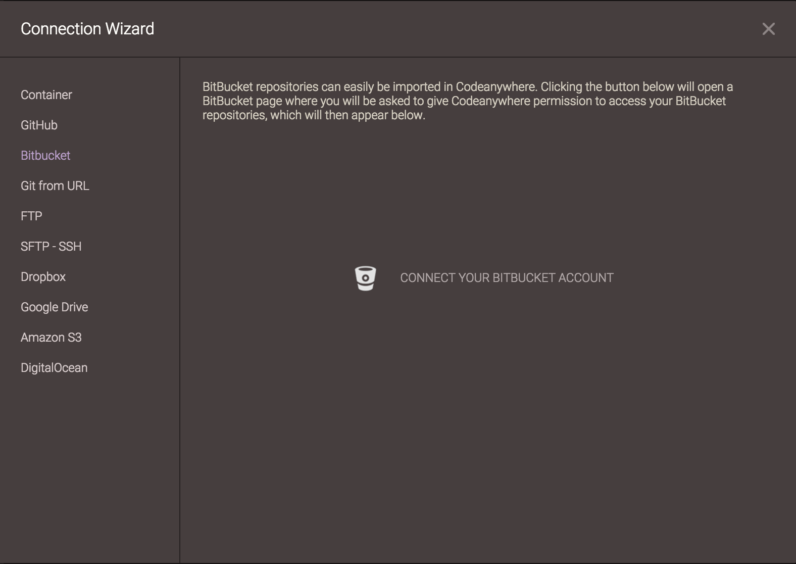
Enter Bitbucket details to connect to your Bitbucket account and authorize Codeanywhere for quick and easy access.
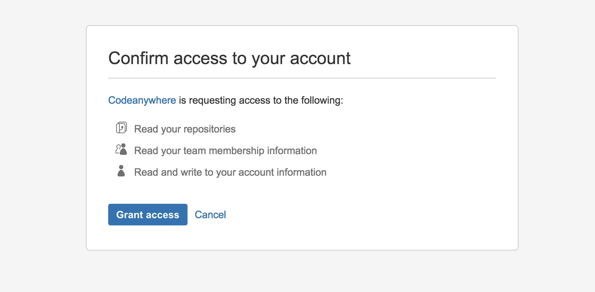
You’ll be prompted which repository you want to connect to.
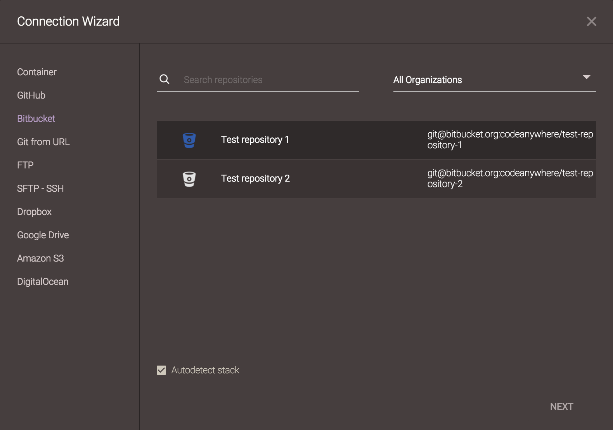
Now just select repository you want to access, setup your development environment, or let our system decide for you!
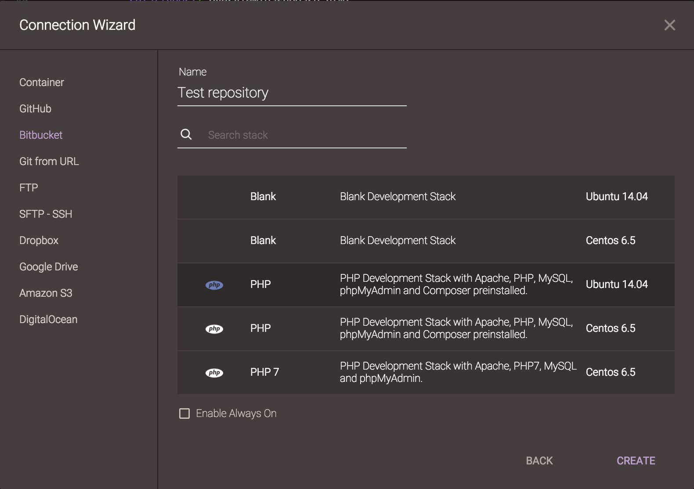
Now you’ve created a new Container with your repository!
Once you have got the repo in Codeanywhere, you can work on it from anywhere. You'll be able to edit your files, or run projects within Codeanywhere!
Bitbucket SSH key
You can link your Codeanywhere SSH key to your Bitbucket account. That way, you can push commits to your private repo without password prompt. To do so, copy your Codeanywhere public key and paste it to your Bitbucket account (Account -> manage account -> SSH keys -> add Key)
Now your Codeanywhere account is authorized to make changes to your repo.
If you already have repository in Bitbucket, just by cloning your repository, your git will be setup. If you have existing project with empty Bitbucket git repository, you can add your repo with "git remote add origin {GIT_SSH_URL}". You can find your {GIT_SSH_URL} by clicking clone in bitbucket repo, then copying url next to 'git clone', its format is git@bitbucket.org:/username/repository.git
Working with repositories
You can push changes to Bitbucket using standard git commands inside your SSH terminal:
git add -A // To track all files
git commit -am "message" // To commit changes
git push origin master // Push your local changes to bitbucket
For more information see working with repositories
Git from URL
Codeanywhere will create a Container for each repository and you will be able to edit your code directly from there. Then, you can push changes back to your repo using your SSH Terminal! Just check our Working with Repositories section for further instructions.
Creating an Git Container from URL
Go to File -> New Connection -> GitFromURL
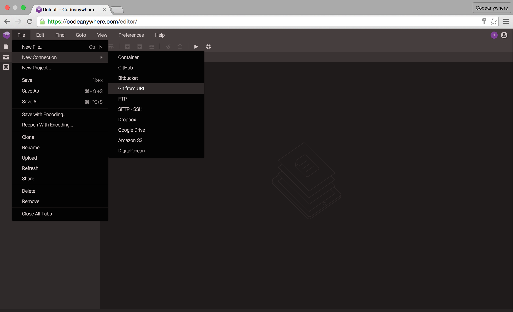
You can connect to your repository by entering your repository url in Git from URL form!
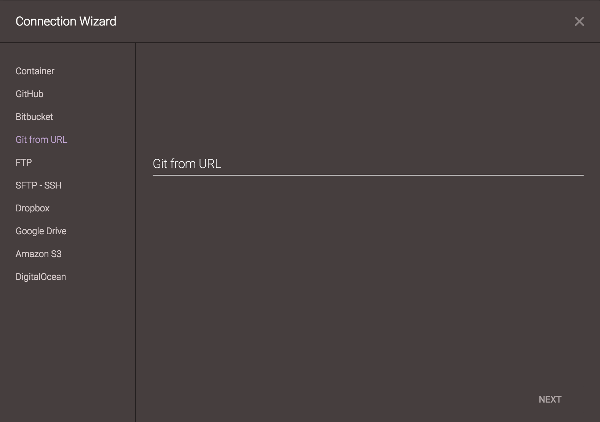
Select a Stack and a name and you’ve created a new Container with your repository!
Working with repositories
git add -A // To track all files
git commit -am "message" // To commit changes
git push origin master // Push your local changes
FTP
With Codeanywhere, you can connect your existing FTP/FTPs server!
Adding an existing FTP/FTPs
Go to File -> New Connection -> FTP.
After selecting it, Add FTP window appears where you enter server information and add that server to your Project for quick and easy access.
- Server name - the name which will be shown in File Explorer, it is user definable, meaning you can name your server however you want
- Hostname - the hostname or IP address of your server (example: ftp.mywebsite.com)
- Username - username of your FTP/FTPS server
- Password - password of your FTP/FTPS server
- Type - choose between FTP or FTPs -- if FTPs is selected, choose Authentication Type: Explicit FTP over TLS or Implicit FTP over TLS
- Initial dir - set path
- Timeout - default: 20
- Port - default: 21
Your FTP/FTPs server will be automatically added to the File Explorer with an FTP icon.
Managing FTP/FTPs
If you right-click on any FTP server listed, it will expand a menu offering more options: Rename, Permissions, Refresh, Create File, Create Folder, Upload, Share, Remove and Settings – where you can change your FTP/FTPs credentials.
To access SSH terminal, simply add an SSH connection instead and you'll have all the features of your FTP with SSH terminal! Right-clicking folders and files gives you some additional options such as Copy and Cut, to simplify managing of files and folders – still you can simply Drag and Drop your files in order to move them between folders and even Connections!
Local FTP or FTPS
Codeanywhere uses its file services in the cloud that are used for making connections. Behind the scenes it looks something like this:
Codeanywhere Web or mobile app ----> Codeanywhere API ----> Codeanywhere File Service ----> Your FTP/FTPS Server
If your FTP/FTPS server is in your local network, the only way you could connect to your server from Codeanywhere is that you use port forwarding on your router to your local FTP/FTPS server. The other problem that could come in your case is your router's public IP. If your internet provider does not provide you a static IP, then you would also need to use some of DDNS services.
Server response
Codeanywhere is acting as a "middle man" between user and your server - any action done by user is firstly processed at our server and then sent to your server. Same thing works in opposite direction, your server sends response to Codeanywhere and then Codeanywhere forwards the response back to user. Also, the speed of the server response depends on the server location. If your server is located it America, the response will be faster, but if it's located in China it will be slower. We do plan to expand our server coverage around the world for faster connections!
IP Whitelist
While performing actions using Codeanywhere, the requests are sent from our app to your server. You must make sure that your server is reachable from the following IP addresses:
- 65.52.184.164
- 51.141.5.180
- 52.161.27.120
- 54.187.136.143
- 54.187.142.118
- 54.187.182.165
- 54.187.44.75
If you have no administration rights on the server, please ask your administrator whitelist these IP’s.
SFTP - SSH
With Codeanywhere, you can connect your existing SFTP/SSH server!
Adding an existing SSH
Go to File -> New Connection -> SFTP-SSH.
After selecting it, Add SSH window appears where you enter server information and add that server to your Project for quick and easy access.
- Server name - the name which will be shown in File Explorer, it is user definable, meaning you can name your server however you want
- Hostname - the hostname or IP address of your server (example: ssh.mywebsite.com)
- Username - username of your SSH/SFTP server
- Password - password of your SSH/SFTP server
- Authentication - use different type of authentication: Password, Public Key, Private Key
- Initial dir - set path
- Timeout - default: 20
- Port - default: 22
Your SFTP-SSH server will be automatically added to the File Explorer with an SSH icon. If you right-click on any server listed, it will expand a menu offering more options: Rename, Permissions, Refresh, Create File, Create Folder, Upload, Share, Remove and Settings – where you can change your credentials.
Local SSH or SFTP
Codeanywhere uses its file services in the cloud that are used for making connections. Behind the scenes it looks something like this:
Codeanywhere Web or mobile app ----> Codeanywhere API ----> Codeanywhere File Service ----> Your SFTP-SSH Server
If your server is in your local network, the only way you could connect to your server from Codeanywhere is that you use port forwarding on your router to your local SSH server. The other problem that could come in your case is your router's public IP. If your internet provider does not provide you a static IP, then you would also need to use some of DDNS services.
Server response
While working with FileZilla you are directly connected from local computer to your server, on the other hand the Codeanywhere is acting as a "middle man" between user and SFTP-SSH - any action done by user is firstly processed at our server and then sent to the your server. Same thing works in opposite direction, server sends response to Codeanywhere and then Codeanywhere forwards the response back to user. Also, the speed of the server response depends on the server location. If your server is located it America, the response will be faster, but if it's located in China it will be slower. We do plan to expand our server coverage around the world for faster connections!
IP whitelist
While performing actions using Codeanywhere, the requests are sent from our app to your server. You must make sure that your server is reachable from the following IP addresses:
- 65.52.184.164
- 51.141.5.180
- 52.161.27.120
- 54.187.136.143
- 54.187.142.118
- 54.187.182.165
- 54.187.44.75
If you have no administration rights on the server, please ask your administrator to whitelist these IP’s.
Google Drive
With Codeanywhere, you can connect your Google Drive account!
Adding a New Connection to Google Drive
Go to File -> New Connections -> Google Drive.
After selecting it, Add Google Drive Access window appears. Click on "Add your Google Drive Account" in order to proceed.
Enter your Google Drive account details to add that Google Drive account to your server list for quick and easy access.
If the Google Drive account is added successfully it will appear in your File Explorer with the Google Drive icon. Now you can easily edit files from your Google Drive account!
Invalid Token issue
If you receive an Invalid Token error, it means there is something wrong with your long-term access token, so please try removing and adding your Drive account. If that does not work please try revoking access to Codeanywhere from your Google security page located at: https://www.google.com/settings/security - under Connected apps and sites, Remove Codeanywhere, and afterwards add it again.
Dropbox
With Codeanywhere, you can connect your Dropbox account!
Adding a New Connection to Dropbox
Go to File -> New Connections -> Dropbox.
After selecting it, Add Dropbox Access window appears. Click on "Add your Dropbox Account" in order to proceed.
Enter your Dropbox account details to add that Dropbox account to your server list for quick and easy access.
If the Dropbox account is added successfully it will appear in your File Explorer with the Dropbox icon!
Amazon S3
Amazon's S3 is integrated into Codeanywhere just as FTP, Dropbox, and Google Drive.
Creating Amazon S3 connection
Go to File -> New Connections -> Amazon S3.
After selecting it, enter credentials of your S3 Bucket:
- Server - name of your AmazonS3 Server
- Bucket - name of your AmazonS3 Bucket
- Access Key ID - a alphanumeric text string that uniquely identifies the user who owns the account
- Secret Access Key - password of an AmazonS3 account
If the S3 account is added successfully it will appear in your File Explorer with the S3 icon.
DigitalOcean
With Codeanywhere, you can work directly with your DigitalOcean Droplets!
Adding a New Connection to DigitalOcean
In order to create a new Droplet using Codeanywhere, simply go to File -> New Connection -> DigitalOcean.
After selecting DigitalOcean, Add DigitalOcean Access window appears. Click on "Connect your DigitalOcean Account" in order to proceed.
Enter your Digital Ocean account details to log in and connect to your Digital Ocean account and authorize Codeanywhere for quick and easy access!
Now, in your Editor, you’ll be able to create a new Droplet which will be added to your Digital Ocean account.
Creating a new Droplet
First of all, you can select your new Droplet image from 4 categories: Distributions, One-click Apps, Snapshots and Backups. Also, here, you can select Droplet’s Size, as well as Region of your Droplet - the same way you do that with Digital Ocean!
After selecting Next, you can enter Host name of your Droplet which will also be shown in your Codeanywhere file tree, as well as in your Digital Ocean account, SSH Keys you’d like to import and any Additional Add-on you’d like to select.
Click Create and your Droplet will be added into your Codeanywhere account and to your Digital Ocean account!
Managing a Droplet
With Codeanywhere, you get SSH access to your Droplet and you can use all the necessary actions! Also, you can use other actions:
- Turn Off / Start - power off your Droplet at any time and turn it on again,
- Restart - reboot your Droplet,
- Settings - change settings of your Droplet,
- Rename - change Host name,
- Refresh - refresh Droplet,
- Create File - create file directly in a Droplet, just enter name and extension of your file,
- Create Folder - create folder directly in a Droplet,
- Upload - simply upload from your local machine into your Droplet,
- Share - share your Droplet with other users for collaboration, or if you just want them to view your Droplet
- Remove - remove your Droplet from Codeanyhwere. It will still remain active in your Digital Ocean account.
You can check these options by right clicking on your new Droplet in Codeanywhere.
What happens when you delete a Droplet outside of Codeanywhere’s UI?
When you delete a Droplet outside of Codeanywhere’s UI, you’ll receive the following message next to your Droplet in your File Tree: “Error:Droplet Not Found”, and you won’t be able to access it anymore since it is destroyed.
Keep in mind, that if you use Codeanywhere to Remove your Droplet, it will disappear from your Codeanywhere account, but you’ll still be able to access it using Digital Ocean.
Adding authorization to a different account
If you want to remove authorization for your Digital Ocean account, go to your Dashboard and under Account, select Disconnect from your current Digital Ocean account.
Now, you can authorize different Digital Ocean account by simply Connecting to a different one - the same way as described before, or if you’re already logged in Digital Ocean account, directly from your Dashboard.
Adding existing Droplet
While creating a Droplet via Codeanywhere, we have a full integration, and connection of an existing Droplet is possible by using SSH connection. While connecting via SSH server, you have to take your CA public key and implement it inside authenticated_keys.
OneDrive
With Codeanywhere, you can connect your OneDrive account!
Adding a New Connection to OneDrive
Go to File -> New Connections -> OneDrive.
After selecting it, Add OneDrive Access window appears. Click on "Add your OneDrive Account" in order to proceed.
Enter your OneDrive account details to add that OneDrive account to your server list for quick and easy access.
If the OneDrive account is added successfully it will appear in your File Explorer with the OneDrive icon. Now you can easily edit files from your OneDrive account!
Preferences
Preferences Structure
You’ll see preferences in Top Menu Bar. Preferences can be defined in one of two Layers: User and Project Preferences. When retrieving a preference value, preferences defined in Project layer are taken first, then if not defined there, values from User Lazer are used and if nothing is defined there as well, Default value is used.
Preferences can be defined using Graphical user interface or by editing JSON file.
Bz default, GUI Preferences is used but if you prefer defining your preferences in JSON, you can turn on "Open as JSON" in Preferences section of Top Menu Bar.
There is 5 Preferences categories:
General
General Preferences are divided in three groups: Workspace, File Explorer and Editor.
Using GUI Preferences, you can set your general preferences and when you are done, just choose "Save" option.
If you are defining preferences using JSON you must follow the Default General Preferences syntax which you can see at the bottom of this section.
For example, if you wish to change a Theme, you'll see it is set to:
"workspace": {
"theme": "monokai"
}
And now you can change it inside Preferences -> User/Project -> General, by adding code:
"workspace": {
"theme": "white"
}
And by doing this, you'll override settings from Default.
All Default General Preferences:
{
"workspace": {
// should preferences be defined in JSON format
"json_preferences": false,
// whether to use live pair programming on shared files
"pair_programming": false,
// codeanywhere visual theme
// currently available: "monokai", "monokai-retina", "dark", "white"
"theme": "monokai",
// editor syntax highlighting
// currently available: "monokai", "dark", "white", "eclipse", "ambiance", "blackboard", "pastel-on-dark", "seti"
"color_scheme": "monokai",
// use sound notifications (for example on file save)
"sounds": true,
// whether to show info on how to use copy/paste in SSH terminal (for windows)
"ssh_copy_paste_info": true,
// whether to open SSH Terminal tabs in bottom panel (if single or row-2 layout is used)
"open_ssh_in_bottom_panel": false
},
"fileExplorer": {
// should file explorer be visible
"visible": true,
// show checkboxes for selecting files in file explorer
"checkboxes": false,
// open files and folders with a double click
"dblclick": false,
// show hidden files and folders
"show_hidden_files": true,
// show open files
"show_open_files": true,
// should horizontal scroll be enabled
"horizontal_scroll": false,
// should drag & drop be disabled
"dragDrop_disabled": false
},
"editor": {
// auto-close brackets and quotes while typing. By default, it'll auto-close ()[]{}''""
"auto_close_brackets": true,
// auto-close html tags
"auto_close_tags": true,
// show code completions while typing
"autocomplete": true,
"bookmarks": true,
// whether to periodically save unsaved opened tabs
"autosave": false,
// whether to show colorpicker when invoked
"colorpicker": true,
// auto detect indentation on file open (spaces or tabs)
"detect_indentation": true,
// open file with encoding
"default_encoding": "UTF-8",
// whether to expand emmet abbreviation when indenting (usually when tab key is pressed)
"emmet_expand_abbreviation_on_indent": true,
// show fold icons in gutter
"fold_gutter": true,
// editor font size
"font_size": 14,
// editor font family (if set to false, theme default will be used)
// available options: 'Anonymous Pro', 'Droid Sans Mono', 'Inconsolata', 'Raleway', 'PT Mono', 'Source Code Pro', 'Share Tech Mono', 'Ubuntu Mono'
"font_family": "Inconsolata",
// the period of inactivity (in milliseconds) that will cause a new history event to be started when typing or deleting
"history_event_delay": 250,
// highlights occurrences of the selected text
"highlight_selection_matches": true,
// highlight active line in gutter
"hover_active_line": true,
// default indentation (can be ignored if detect_indetation is enabled)
"indent_with_tabs": false,
// show line numbers in gutter
"line_numbers": true,
// show errors and warnings in gutter
"lint": true,
// when enabled, causes matching brackets to be highlighted whenever the cursor is next to them
"match_brackets": true,
// when enabled, will cause the tags around the cursor to be highlighted
"match_tags": true,
// whether to show MiniMap in editor
"minimap": true,
// open editor in read-only mode
"read_only": false,
// editor scroll style
// available options: "overlay" and "native"
"scrollbar_style": "overlay",
// the number of spaces a tab is considered equal to
"tab_size": 2,
// the maximum number of undo levels that the editor stores
"undo_depth": 1000,
// whether to scroll or wrap long lines
"wrap_lines": false
}
}
Key Bindings
Nearly every action in Codeanywhere has a corresponding command associated with it. On top of that, every command also has a key binding that can be used to effortlessly execute the command.
Key Bindings preferences can be defined for two categories: PC and Mac.
Using GUI Preferences, you can change existing commands and when you are done, just choose "Save" option.
If you are defining preferences using JSON you must follow the Default Key Bindings Preferences syntax which you can see at the bottom of this section.
For example, if you wish to change key shortcut for auto indenting, you'll see it is set to:
"auto_indent": {
"keys": ["Alt-Shift-Tab"]
}
And now you can change it inside Preferences -> User/Project -> Key Bindings, by adding code:
"auto_indent": {
"keys": ["Alt-Shift-Tab-A"]
}
And by doing this, you'll override settings from Default.
All Default Key Bindings Preferences:
{
"auto_indent": {
"keys": ["Alt-Shift-Tab"]
},
"beautify": {
"keys": ["Ctrl-B"],
"os": {
"mac": {
"keys": ["Cmd-B"]
}
}
},
"close_goto": {
"keys": ["Esc"]
},
"close_find": {
"keys": ["Esc"]
},
"duplicate_line": {
"keys": ["Shift-Ctrl-D"],
"os": {
"mac": {
"keys": ["Shift-Cmd-D"]
}
}
},
"goto_line": {
"keys": ["Ctrl-G"],
"os": {
"mac": {
"keys": ["Cmd-G"]
}
}
},
"open_colorpicker": {
"keys": ["Ctrl-Alt-K"],
"os": {
"mac": {
"keys": ["Cmd-Alt-K"]
}
}
},
"open_goto": {
"keys": ["Ctrl-P"],
"os": {
"mac": {
"keys": ["Cmd-P"]
}
}
},
"open_goto_commands": {
"keys": ["Ctrl-Shift-P"],
"os": {
"mac": {
"keys": ["Cmd-Shift-P"]
}
}
},
"open_find": {
"keys": ["Ctrl-F"],
"os": {
"mac": {
"keys": ["Cmd-F"]
}
}
},
"open_replace": {
"keys": ["Ctrl-R"],
"os": {
"mac": {
"keys": ["Cmd-R"]
}
}
},
"font_size_decrease": {
"keys": ["Shift-Ctrl-Alt-Down"],
"os": {
"mac": {
"keys": ["Shift-Cmd-Alt-Down"]
}
}
},
"font_size_increase": {
"keys": ["Shift-Ctrl-Alt-Up"],
"os": {
"mac": {
"keys": ["Shift-Cmd-Alt-Up"]
}
}
},
"layout_single": {
"keys": ["Alt-Shift-1"],
"os": {
"mac": {
"keys": ["Alt-Cmd-1"]
}
}
},
"layout_columns_2": {
"keys": ["Alt-Shift-2"],
"os": {
"mac": {
"keys": ["Alt-Cmd-2"]
}
}
},
"layout_columns_3": {
"keys": ["Alt-Shift-3"],
"os": {
"mac": {
"keys": ["Alt-Cmd-3"]
}
}
},
"layout_columns_4": {
"keys": ["Alt-Shift-4"],
"os": {
"mac": {
"keys": ["Alt-Cmd-4"]
}
}
},
"layout_rows_2": {
"keys": ["Alt-Shift-8"],
"os": {
"mac": {
"keys": ["Alt-Shift-Cmd-2"]
}
}
},
"layout_rows_3": {
"keys": ["Alt-Shift-9"],
"os": {
"mac": {
"keys": ["Alt-Shift-Cmd-3"]
}
}
},
"layout_grid": {
"keys": ["Alt-Shift-5"],
"os": {
"mac": {
"keys": ["Alt-Cmd-5"]
}
}
},
"new_file": {
"keys": ["Alt-N"],
"os": {
"mac": {
"keys": ["Ctrl-N"]
}
}
},
"redo": {
"keys": ["Ctrl-Y", "Ctrl-Shift-Z"],
"os": {
"mac": {
"keys": ["Cmd-Y", "Cmd-Shift-Z"]
}
}
},
"save": {
"keys": ["Ctrl-S"],
"os": {
"mac": {
"keys": ["Cmd-S"]
}
}
},
"save_as": {
"keys": ["Ctrl-Shift-S"],
"os": {
"mac": {
"keys": ["Cmd-Shift-S"]
}
}
},
"save_all": {
"keys": ["Ctrl-Alt-S"],
"os": {
"mac": {
"keys": ["Cmd-Alt-S"]
}
}
},
"swap_line_down": {
"keys": ["Ctrl-Down"],
"os": {
"mac": {
"keys": ["Cmd-Ctrl-Down"]
}
}
},
"swap_line_up": {
"keys": ["Ctrl-Up"],
"os": {
"mac": {
"keys": ["Cmd-Ctrl-Up"]
}
}
},
"toggle_file_explorer": {
"keys": ["Alt-X"]
},
"undo": {
"keys": ["Ctrl-Z"],
"os": {
"mac": {
"keys": ["Cmd-Z"]
}
}
},
"clear_bookmarks": {
"keys": ["Shift-Ctrl-F2"],
"os": {
"mac": {
"keys": ["Shift-Cmd-F2"]
}
}
},
"indent": {
"keys": ["Tab"]
},
"del_char_after": {
"keys": ["Delete"],
"os": {
"mac": {
"keys": ["Delete", "Ctrl-D"]
}
}
},
"del_char_before": {
"keys": ["Backspace", "Shift-Backspace"],
"os": {
"mac": {
"keys": ["Backspace", "Shift-Backspace", "Ctrl-H"]
}
}
},
"del_group_after": {
"keys": ["Ctrl-Delete"],
"os": {
"mac": {
"keys": ["Alt-Delete", "Ctrl-Alt-Backspace"]
}
}
},
"del_group_before": {
"keys": ["Ctrl-Backspace"],
"os": {
"mac": {
"keys": ["Alt-Backspace"]
}
}
},
"del_line_left": {
"keys": ["Ctrl-K Ctrl-Backspace"],
"os": {
"mac": {
"keys": ["Cmd-K Cmd-Backspace"]
}
}
},
"del_line_right": {
"keys": ["Ctrl-K Ctrl-K"],
"os": {
"mac": {
"keys": ["Cmd-K Cmd-K"]
}
}
},
"del_word_after": {
"keys": ["Alt-D"],
"os": "mac"
},
"del_word_before": {
"keys": ["Alt-Backspace"],
"os": "mac"
},
"del_wrapped_line_left": {
"keys": ["Cmd-Backspace"],
"os": "mac"
},
"del_wrapped_line_right": {
"keys": ["Cmd-Delete"],
"os": "mac"
},
"delete_line": {
"keys": ["Shift-Ctrl-K"],
"os": {
"mac": {
"keys": ["Shift-Cmd-K"]
}
}
},
"delete_to_sublime_mark": {
"keys": ["Ctrl-K Ctrl-W"],
"os": {
"mac": {
"keys": ["Cmd-K Cmd-W"]
}
}
},
"downcase_at_cursor": {
"keys": ["Ctrl-K Ctrl-L"],
"os": {
"mac": {
"keys": ["Cmd-K Cmd-L"]
}
}
},
"emmet_expand_abbreviation": {
"keys": ["Ctrl-E"],
"os": {
"mac": {
"keys": ["Cmd-E"]
}
}
},
"find_all_under": {
"keys": ["Alt-F3"]
},
"find_incremental": {
"keys": ["Ctrl-I"],
"os": {
"mac": {
"keys": ["Cmd-I"]
}
}
},
"find_incremental_reverse": {
"keys": ["Shift-Ctrl-I"],
"os": {
"mac": {
"keys": ["Shift-Cmd-I"]
}
}
},
"find_next": {
"keys": ["F3"],
"os": {
"mac": {
"keys": ["F3"]
}
}
},
"find_prev": {
"keys": ["Shift-F3"],
"os": {
"mac": {
"keys": ["Shift-F3"]
}
}
},
"find_under": {
"keys": ["Ctrl-F3"],
"os": {
"mac": {
"keys": ["Cmd-F3"]
}
}
},
"find_under_previous": {
"keys": ["Shift-Ctrl-F3"],
"os": {
"mac": {
"keys": ["Shift-Cmd-F3"]
}
}
},
"fold": {
"keys": ["Alt-Up"]
},
"fold_all": {
"keys": ["Alt-Shift-Up"]
},
"go_char_left": {
"keys": ["Left"],
"os": {
"mac": {
"keys": ["Left", "Ctrl-B"]
}
}
},
"go_char_right": {
"keys": ["Right"],
"os": {
"mac": {
"keys": ["Right", "Ctrl-F"]
}
}
},
"go_doc_end": {
"keys": ["Ctrl-End"],
"os": {
"mac": {
"keys": ["Cmd-Down", "Cmd-End", "Ctrl-Down"]
}
}
},
"go_doc_start": {
"keys": ["Ctrl-Home"],
"os": {
"mac": {
"keys": ["Cmd-Home", "Cmd-Up", "Ctrl-Up"]
}
}
},
"go_group_left": {
"keys": ["Ctrl-Left"],
"os": {
"mac": {
"keys": ["Alt-Left"]
}
}
},
"go_group_right": {
"keys": ["Ctrl-Right"],
"os": {
"mac": {
"keys": ["Alt-Right"]
}
}
},
"go_line_end": {
"keys": ["Alt-Right"],
"os": {
"mac": {
"keys": ["Alt-Right", "Ctrl-E"]
}
}
},
"go_line_left": {
"keys": ["Ctrl-Left"],
"os": {
"mac": {
"keys": ["Cmd-Left"]
}
}
},
"go_line_right": {
"keys": ["Ctrl-Right"],
"os": {
"mac": {
"keys": ["Cmd-Right"]
}
}
},
"go_line_start": {
"keys": ["Alt-Left"],
"os": {
"mac": {
"keys": ["Alt-Left", "Ctrl-A"]
}
}
},
"go_line_start_smart": {
"keys": ["Home"]
},
"go_page_down": {
"keys": ["PageDown"],
"os": {
"mac": {
"keys": ["PageDown", "Ctrl-V"]
}
}
},
"go_page_up": {
"keys": ["PageUp"],
"os": {
"mac": {
"keys": ["PageUp", "Shift-Ctrl-V"]
}
}
},
"go_subword_left": {
"keys": ["Alt-Left"]
},
"go_subword_right": {
"keys": ["Alt-Right"]
},
"go_to_bracket": {
"keys": ["Ctrl-M"],
"os": {
"mac": {
"keys": ["Cmd-M"]
}
}
},
"go_word_left": {
"keys": ["Alt-B"],
"os": "mac"
},
"go_word_right": {
"keys": ["Alt-F"],
"os": "mac"
},
"unindent": {
"keys": ["Shift-Tab"],
"os": {
"mac": {
"keys": ["Shift-Tab"]
}
}
},
"insert_line_after": {
"keys": ["Ctrl-Enter"],
"os": {
"mac": {
"keys": ["Cmd-Enter"]
}
}
},
"insert_line_before": {
"keys": ["Shift-Ctrl-Enter"],
"os": {
"mac": {
"keys": ["Shift-Cmd-Enter"]
}
}
},
"join_lines": {
"keys": ["Ctrl-J"],
"os": {
"mac": {
"keys": ["Cmd-J"]
}
}
},
"new_line_and_indent": {
"keys": ["Enter"]
},
"next_bookmark": {
"keys": ["F2"],
"os": {
"mac": {
"keys": ["F2"]
}
}
},
"prev_bookmark": {
"keys": ["Shift-F2"],
"os": {
"mac": {
"keys": ["Shift-F2"]
}
}
},
"redo_selection": {
"keys": ["Alt-U"],
"os": {
"mac": {
"keys": ["Shift-Ctrl-U", "Shift-Cmd-U"]
}
}
},
"scroll_line_down": {
"keys": ["Ctrl-Shift-Down"],
"os": {
"mac": {
"keys": ["Cmd-Down"]
}
}
},
"scroll_line_up": {
"keys": ["Ctrl-Shift-Up"],
"os": {
"mac": {
"keys": ["Cmd-Up"]
}
}
},
"select_all": {
"keys": ["Ctrl-A"],
"os": {
"mac": {
"keys": ["Cmd-A"]
}
}
},
"select_between_brackets": {
"keys": ["Shift-Ctrl-M"],
"os": {
"mac": {
"keys": ["Shift-Cmd-M"]
}
}
},
"select_bookmarks": {
"keys": ["Alt-F2"]
},
"select_line": {
"keys": ["Ctrl-L"],
"os": {
"mac": {
"keys": ["Cmd-L"]
}
}
},
"select_lines_downward": {
"keys": ["Shift-Alt-Down"],
"os": {
"mac": {
"keys": ["Shift-Alt-Down"]
}
}
},
"select_lines_upward": {
"keys": ["Shift-Alt-Up"],
"os": {
"mac": {
"keys": ["Shift-Alt-Up"]
}
}
},
"select_next_occurrence": {
"keys": ["Ctrl-D"],
"os": {
"mac": {
"keys": ["Cmd-D"]
}
}
},
"select_scope": {
"keys": ["Shift-Ctrl-Space"],
"os": {
"mac": {
"keys": ["Shift-Cmd-Space"]
}
}
},
"select_to_sublime_mark": {
"keys": ["Ctrl-K Ctrl-A"],
"os": {
"mac": {
"keys": ["Cmd-K Cmd-A"]
}
}
},
"set_sublime_mark": {
"keys": ["Ctrl-K Ctrl-Space"],
"os": {
"mac": {
"keys": ["Cmd-K Cmd-Space"]
}
}
},
"show_in_center": {
"keys": ["Ctrl-K Ctrl-C"],
"os": {
"mac": {
"keys": ["Cmd-K Cmd-C"]
}
}
},
"show_completions": {
"keys": ["Ctrl-Space"]
},
"select_next_tab": {
"keys": ["Shift-Ctrl-Alt-Right"],
"os": {
"mac": {
"keys": ["Shift-Cmd-Alt-Right"]
}
}
},
"select_previous_tab": {
"keys": ["Shift-Ctrl-Alt-Left"],
"os": {
"mac": {
"keys": ["Shift-Cmd-Alt-Left"]
}
}
},
"single_selection": {
"keys": ["Esc"]
},
"single_selection_top": {
"keys": ["Esc"],
"os": {
"mac": {
"keys": ["Esc"]
}
}
},
"sort_lines": {
"keys": ["F9"],
"os": {
"mac": {
"keys": ["F9"]
}
}
},
"sort_lines_insensitive": {
"keys": ["Ctrl-F9"],
"os": {
"mac": {
"keys": ["Cmd-F9"]
}
}
},
"split_selection_by_line": {
"keys": ["Shift-Ctrl-L"],
"os": {
"mac": {
"keys": ["Shift-Cmd-L"]
}
}
},
"sublime_yank": {
"keys": ["Ctrl-K Ctrl-Y"],
"os": {
"mac": {
"keys": ["Cmd-K Cmd-Y"]
}
}
},
"swap_with_sublime_mark": {
"keys": ["Ctrl-K Ctrl-X"],
"os": {
"mac": {
"keys": ["Cmd-K Cmd-X"]
}
}
},
"toggle_bookmark": {
"keys": ["Ctrl-F2"],
"os": {
"mac": {
"keys": ["Cmd-F2"]
}
}
},
"toggle_comment": {
"keys": ["Ctrl-/"],
"os": {
"mac": {
"keys": ["Cmd-/"]
}
}
},
"toggle_overwrite": {
"keys": ["Insert"]
},
"transpose_chars": {
"keys": ["Ctrl-T"],
"os": {
"mac": {
"keys": ["Cmd-T"]
}
}
},
"undo_selection": {
"keys": ["Ctrl-U"],
"os": {
"mac": {
"keys": ["Cmd-U"]
}
}
},
"unfold": {
"keys": ["Alt-Down"]
},
"unfold_all": {
"keys": ["Alt-Shift-Down"]
},
"upcase_at_cursor": {
"keys": ["Ctrl-K Ctrl-U"],
"os": {
"mac": {
"keys": ["Cmd-K Cmd-U"]
}
}
},
"wrap_lines": {
"keys": ["Alt-Q"]
}
}
FileTypes
For syntax highlighting and language support, Codeanywhere uses Codemirror. CodeMirror supports over two dozen different modules, and any changes made to CodeMirror are reflected back into Codeanywhere. By default, files are highlighted based on their file extension. You can still add new extensions in User or Project preferences and override the ones from General preferences
Using GUI Preferences, you can change existing filetype exentions or add a new one using option menu and when you are done, just choose "Save" option.
If you are defining preferences using JSON you must follow the Default FileTypes Preferences syntax which you can see at the bottom of this section.
For example, if you wish to add new extension for HTML mode, you'll see it is set to:
"HTML": {
"extension": ["html", "htm"]
}
And now you can add CTP extension inside Preferences -> User/Project -> File Types, by adding code:
"HTML": {
"extension": ["html", "htm", "CTP"]
}
And by doing this, you'll override settings from Default.
All Default FileTypes Preferences:
{
"APL": {
"extension": ["dyalog", "apl"]
},
"PGP": {
"extension": ["pgp"]
},
"ASN.1": {
"extension": ["asn", "asn1"]
},
"Asterisk": {
"extension": []
},
"Brainfuck": {
"extension": ["b", "bf"]
},
"C": {
"extension": ["c", "h"]
},
"C++": {
"extension": ["cpp", "c++", "cc", "cxx", "hpp", "h++", "hh", "hxx"]
},
"Cobol": {
"extension": ["cob", "cpy"]
},
"C#": {
"extension": ["cs"]
},
"Clojure": {
"extension": ["clj"]
},
"CMake": {
"extension": ["cmake", "cmake.in"]
},
"CoffeeScript": {
"extension": ["coffee"]
},
"Common Lisp": {
"extension": ["cl", "lisp", "el"]
},
"Cypher": {
"extension": ["cyp", "cypher"]
},
"Cython": {
"extension": ["pyx", "pxd", "pxi"]
},
"CSS": {
"extension": ["css"]
},
"CQL": {
"extension": ["cql"]
},
"D": {
"extension": ["d"]
},
"Dart": {
"extension": ["dart"]
},
"diff": {
"extension": ["diff", "patch"]
},
"Django": {
"extension": []
},
"Dockerfile": {
"extension": []
},
"DTD": {
"extension": ["dtd"]
},
"Dylan": {
"extension": ["dylan", "dyl", "intr"]
},
"EBNF": {
"extension": []
},
"ECL": {
"extension": ["ecl"]
},
"Eiffel": {
"extension": ["e"]
},
"Elm": {
"extension": ["elm"]
},
"Embedded Javascript": {
"extension": ["ejs"]
},
"Embedded Ruby": {
"extension": ["erb"]
},
"Erlang": {
"extension": ["erl"]
},
"Factor": {
"extension": ["factor"]
},
"Forth": {
"extension": ["forth", "fth", "4th"]
},
"Fortran": {
"extension": ["f", "for", "f77", "f90"]
},
"F#": {
"extension": ["fs"]
},
"Gas": {
"extension": ["s"]
},
"Gherkin": {
"extension": ["feature"]
},
"GitHub Flavored Markdown": {
"extension": []
},
"Go": {
"extension": ["go"]
},
"Groovy": {
"extension": ["groovy"]
},
"HAML": {
"extension": ["haml"]
},
"Haskell": {
"extension": ["hs"]
},
"Haxe": {
"extension": ["hx"]
},
"HXML": {
"extension": ["hxml"]
},
"ASP.NET": {
"extension": ["aspx"]
},
"HTML": {
"extension": ["html", "htm"]
},
"HTTP": {
"extension": []
},
"IDL": {
"extension": ["pro"]
},
"Jade": {
"extension": ["jade"]
},
"Java": {
"extension": ["java"]
},
"Java Server Pages": {
"extension": ["jsp"]
},
"JavaScript": {
"extension": ["js"]
},
"JSON": {
"extension": ["json", "map"]
},
"JSON-LD": {
"extension": ["jsonld"]
},
"Jinja2": {
"extension": []
},
"Julia": {
"extension": ["jl"]
},
"Kotlin": {
"extension": ["kt"]
},
"LESS": {
"extension": ["less"]
},
"LiveScript": {
"extension": ["ls"]
},
"Lua": {
"extension": ["lua"]
},
"Markdown": {
"extension": ["markdown", "md", "mkd"]
},
"mIRC": {
"extension": []
},
"MariaDB SQL": {
"extension": []
},
"Mathematica": {
"extension": ["m", "nb"]
},
"Modelica": {
"extension": ["mo"]
},
"MUMPS": {
"extension": []
},
"MS SQL": {
"extension": []
},
"MySQL": {
"extension": []
},
"Nginx": {
"extension": []
},
"NTriples": {
"extension": ["nt"]
},
"Objective C": {
"extension": ["m", "mm"]
},
"OCaml": {
"extension": ["ml", "mli", "mll", "mly"]
},
"Octave": {
"extension": ["m"]
},
"Pascal": {
"extension": ["p", "pas"]
},
"PEG.js": {
"extension": ["jsonld"]
},
"Perl": {
"extension": ["pl", "pm"]
},
"PHP": {
"extension": ["php", "php3", "php4", "php5", "phtml", "ctp"]
},
"Pig": {
"extension": ["pig"]
},
"Plain Text": {
"extension": ["txt", "text", "conf", "def", "list", "log"]
},
"PLSQL": {
"extension": ["pls"]
},
"Properties files": {
"extension": ["properties", "ini", "in"]
},
"Python": {
"extension": ["py", "pyw"]
},
"Puppet": {
"extension": ["pp"]
},
"Q": {
"extension": ["q"]
},
"R": {
"extension": ["r"]
},
"reStructuredText": {
"extension": ["rst"]
},
"RPM Changes": {
"extension": []
},
"RPM Spec": {
"extension": ["spec"]
},
"Ruby": {
"extension": ["rb"]
},
"Rust": {
"extension": ["rs"]
},
"Sass": {
"extension": ["sass"]
},
"Scala": {
"extension": ["scala"]
},
"Scheme": {
"extension": ["scm", "ss"]
},
"SCSS": {
"extension": ["scss"]
},
"Shell": {
"extension": ["sh", "ksh", "bash"]
},
"Sieve": {
"extension": ["siv", "sieve"]
},
"Slim": {
"extension": ["slim"]
},
"Smalltalk": {
"extension": ["st"]
},
"Smarty": {
"extension": ["tpl"]
},
"Solr": {
"extension": []
},
"Soy": {
"extension": ["soy"]
},
"SPARQL": {
"extension": ["rq", "sparql"]
},
"Spreadsheet": {
"extension": []
},
"SQL": {
"extension": ["sql"]
},
"Swift": {
"extension": ["swift"]
},
"MariaDB": {
"extension": []
},
"sTeX": {
"extension": []
},
"LaTeX": {
"extension": ["text", "ltx"]
},
"SystemVerilog": {
"extension": ["v"]
},
"Tcl": {
"extension": ["tcl"]
},
"Textile": {
"extension": ["textile"]
},
"TiddlyWiki ": {
"extension": []
},
"Tiki wiki": {
"extension": []
},
"TOML": {
"extension": ["toml"]
},
"Tornado": {
"extension": []
},
"troff": {
"extension": []
},
"TTCN": {
"extension": ["ttcn", "ttcn3", "ttcnpp"]
},
"TTCN_CFG": {
"extension": ["cfg"]
},
"Turtle": {
"extension": ["ttl"]
},
"TypeScript": {
"extension": ["ts"]
},
"Twig": {
"extension": []
},
"VB.NET": {
"extension": ["vb"]
},
"VBScript": {
"extension": ["vbs"]
},
"Velocity": {
"extension": ["vtl"]
},
"Verilog": {
"extension": ["v"]
},
"XML": {
"extension": ["xml", "xsl", "xsd"]
},
"XQuery": {
"extension": ["xy", "xquery"]
},
"YAML": {
"extension": ["yaml", "yml"]
},
"Z80": {
"extension": ["z80"]
}
}
Linting
For JavaScript files, Codeanywhere provides analysis using a combination of our own analysis tools, as well as JSHint (specifically for Javascript code). Our language analysis can't detect if your program is correct, fast, nor has memory leaks, but it can save you time by spotting things like undeclared variables, syntax errors, or other preventable typos. When Codeanywhere detects an issue with your code, an icon appears in the gutter (located left from the editor) for the offending lines of code.
If you hover over any of these icons in the gutter, you'll get a pop-up that presents some information as to what, exactly, the problem is.
There are a lot of parameters in which criteria linting should be done. You can change this parameters using Linting Preferences.
Using GUI Preferences, you can set your linting preferences and when you are done, just choose "Save" option.
If you are defining preferences using JSON you must follow the Default Linting Preferences syntax which you can see at the bottom of this section.
All Default Linting Preferences:
{
/*
* JSHINT default options
* for more info check: http://jshint.com/docs/options
*/
"javascript": {
/*
* Enforcing options
* When set to true, these options will make JSHint produce more warnings about your code.
*/
/**
* This option prohibits the use of bitwise operators such as `^` (XOR),
* `|` (OR) and others. Bitwise operators are very rare in JavaScript
* programs and quite often `&` is simply a mistyped `&&`.
*/
"bitwise" : true,
/**
*
* This options prohibits overwriting prototypes of native objects such as
* `Array`, `Date` and so on.
*
* // jshint freeze:true
* Array.prototype.count = function (value) { return 4; };
* // -> Warning: Extending prototype of native object: 'Array'.
*/
"freeze" : false,
/**
* This option allows you to force all variable names to use either
* camelCase style or UPPER_CASE with underscores.
*
* @deprecated JSHint is limiting its scope to issues of code correctness.
* If you would like to enforce rules relating to code style,
* check out [the JSCS
* project](https://github.com/jscs-dev/node-jscs).
*/
"camelcase" : false,
/**
* This option requires you to always put curly braces around blocks in
* loops and conditionals. JavaScript allows you to omit curly braces when
* the block consists of only one statement, for example:
*
* while (day)
* shuffle();
*
* However, in some circumstances, it can lead to bugs (you'd think that
* `sleep()` is a part of the loop while in reality it is not):
*
* while (day)
* shuffle();
* sleep();
*/
"curly" : false,
/**
* This options prohibits the use of `==` and `!=` in favor of `===` and
* `!==`. The former try to coerce values before comparing them which can
* lead to some unexpected results. The latter don't do any coercion so
* they are generally safer. If you would like to learn more about type
* coercion in JavaScript, we recommend [Truth, Equality and
* JavaScript](http://javascriptweblog.wordpress.com/2011/02/07/truth-equality-and-javascript/)
* by Angus Croll.
*/
"eqeqeq" : false,
/**
* This option enables warnings about the use of identifiers which are
* defined in future versions of JavaScript. Although overwriting them has
* no effect in contexts where they are not implemented, this practice can
* cause issues when migrating codebases to newer versions of the language.
*/
"futurehostile": false,
/**
* This option suppresses warnings about invalid `typeof` operator values.
* This operator has only [a limited set of possible return
* values](https://developer.mozilla.org/en-US/docs/Web/JavaScript/Reference/Operators/typeof).
* By default, JSHint warns when you compare its result with an invalid
* value which often can be a typo.
*
* // 'fuction' instead of 'function'
* if (typeof a == "fuction") { // Invalid typeof value 'fuction'
* // ...
* }
*
* Do not use this option unless you're absolutely sure you don't want
* these checks.
*/
"notypeof" : true,
/**
* This option tells JSHint that your code needs to adhere to ECMAScript 3
* specification. Use this option if you need your program to be executable
* in older browsers—such as Internet Explorer 6/7/8/9—and other legacy
* JavaScript environments.
*/
"es3" : false,
/**
* This option enables syntax first defined in [the ECMAScript 5.1
* specification](http://es5.github.io/). This includes allowing reserved
* keywords as object properties.
*/
"es5" : false,
/**
* This option requires all `for in` loops to filter object's items. The
* for in statement allows for looping through the names of all of the
* properties of an object including those inherited through the prototype
* chain. This behavior can lead to unexpected items in your object so it
* is generally safer to always filter inherited properties out as shown in
* the example:
*
* for (key in obj) {
* if (obj.hasOwnProperty(key)) {
* // We are sure that obj[key] belongs to the object and was not inherited.
* }
* }
*
* For more in-depth understanding of `for in` loops in JavaScript, read
* [Exploring JavaScript for-in
* loops](http://javascriptweblog.wordpress.com/2011/01/04/exploring-javascript-for-in-loops/)
* by Angus Croll.
*/
"forin" : false,
/**
* This option suppresses warnings about declaring variables inside of
* control
* structures while accessing them later from the outside. Even though
* JavaScript has only two real scopes—global and function—such practice
* leads to confusion among people new to the language and hard-to-debug
* bugs. This is why, by default, JSHint warns about variables that are
* used outside of their intended scope.
*
* function test() {
* if (true) {
* var x = 0;
* }
*
* x += 1; // Default: 'x' used out of scope.
* // No warning when funcscope:true
* }
*/
"funcscope" : false,
/**
* This option prohibits the use of immediate function invocations without
* wrapping them in parentheses. Wrapping parentheses assists readers of
* your code in understanding that the expression is the result of a
* function, and not the function itself.
*
* @deprecated JSHint is limiting its scope to issues of code correctness.
* If you would like to enforce rules relating to code style,
* check out [the JSCS
* project](https://github.com/jscs-dev/node-jscs).
*/
"immed" : false,
/**
* This option suppresses warnings about the `__iterator__` property. This
* property is not supported by all browsers so use it carefully.
*/
"iterator" : false,
/**
* This option requires you to capitalize names of constructor functions.
* Capitalizing functions that are intended to be used with `new` operator
* is just a convention that helps programmers to visually distinguish
* constructor functions from other types of functions to help spot
* mistakes when using `this`.
*
* Not doing so won't break your code in any browsers or environments but
* it will be a bit harder to figure out—by reading the code—if the
* function was supposed to be used with or without new. And this is
* important because when the function that was intended to be used with
* `new` is used without it, `this` will point to the global object instead
* of a new object.
*
* @deprecated JSHint is limiting its scope to issues of code correctness.
* If you would like to enforce rules relating to code style,
* check out [the JSCS
* project](https://github.com/jscs-dev/node-jscs).
*/
"newcap" : false,
/**
* This option prohibits the use of `arguments.caller` and
* `arguments.callee`. Both `.caller` and `.callee` make quite a few
* optimizations impossible so they were deprecated in future versions of
* JavaScript. In fact, ECMAScript 5 forbids the use of `arguments.callee`
* in strict mode.
*/
"noarg" : false,
/**
* This option prohibits the use of the comma operator. When misused, the
* comma operator can obscure the value of a statement and promote
* incorrect code.
*/
"nocomma" : false,
/**
* This option warns when you have an empty block in your code. JSLint was
* originally warning for all empty blocks and we simply made it optional.
* There were no studies reporting that empty blocks in JavaScript break
* your code in any way.
*
* @deprecated JSHint is limiting its scope to issues of code correctness.
* If you would like to enforce rules relating to code style,
* check out [the JSCS
* project](https://github.com/jscs-dev/node-jscs).
*/
"noempty" : false,
/**
* This option warns about "non-breaking whitespace" characters. These
* characters can be entered with option-space on Mac computers and have a
* potential of breaking non-UTF8 web pages.
*/
"nonbsp" : false,
/**
* This option prohibits the use of constructor functions for side-effects.
* Some people like to call constructor functions without assigning its
* result to any variable:
*
* new MyConstructor();
*
* There is no advantage in this approach over simply calling
* `MyConstructor` since the object that the operator `new` creates isn't
* used anywhere so you should generally avoid constructors like this one.
*/
"nonew" : false,
/**
* This option prohibits the use of explicitly undeclared variables. This
* option is very useful for spotting leaking and mistyped variables.
*
* // jshint undef:true
*
* function test() {
* var myVar = 'Hello, World';
* console.log(myvar); // Oops, typoed here. JSHint with undef will complain
* }
*
* If your variable is defined in another file, you can use the `global`
* directive to tell JSHint about it.
*/
"undef" : false,
/**
* This option prohibits the use of the grouping operator when it is not
* strictly required. Such usage commonly reflects a misunderstanding of
* unary operators, for example:
*
* // jshint singleGroups: true
*
* delete(obj.attr); // Warning: Unnecessary grouping operator.
*/
"singleGroups": false,
/**
* This option requires all functions to run in ECMAScript 5's strict mode.
* [Strict mode](https://developer.mozilla.org/en/JavaScript/Strict_mode)
* is a way to opt in to a restricted variant of JavaScript. Strict mode
* eliminates some JavaScript pitfalls that didn't cause errors by changing
* them to produce errors. It also fixes mistakes that made it difficult
* for the JavaScript engines to perform certain optimizations.
*
* *Note:* This option enables strict mode for function scope only. It
* *prohibits* the global scoped strict mode because it might break
* third-party widgets on your page. If you really want to use global
* strict mode, see the *globalstrict* option.
*/
"strict" : false,
/**
* When set to true, the use of VariableStatements are forbidden.
* For example:
*
* // jshint varstmt: true
*
* var a; // Warning: `var` declarations are forbidden. Use `let` or `const` instead.
*/
"varstmt": false,
/**
* This option is a short hand for the most strict JSHint configuration as
* available in JSHint version 2.6.3. It enables all enforcing options and
* disables all relaxing options that were defined in that release.
*
* @deprecated The option cannot be maintained without automatically opting
* users in to new features. This can lead to unexpected
* warnings/errors in when upgrading between minor versions of
* JSHint.
*/
"enforceall" : false,
/**
* This option lets you set the maximum length of a line.
*
* @deprecated JSHint is limiting its scope to issues of code correctness. If
* you would like to enforce rules relating to code style, check
* out [the JSCS project](https://github.com/jscs-dev/node-jscs).
*/
"maxlen" : false,
/**
* This option sets a specific tab width for your code.
*
* @deprecated JSHint is limiting its scope to issues of code correctness. If
* you would like to enforce rules relating to code style, check
* out [the JSCS project](https://github.com/jscs-dev/node-jscs).
*/
"indent" : false,
/**
* This options allows you to set the maximum amount of warnings JSHint will
* produce before giving up. Default is 50.
*/
"maxerr" : false,
"predef" : false, // predef is deprecated and being replaced by globals
/**
* This option can be used to specify a white list of global variables that
* are not formally defined in the source code. This is most useful when
* combined with the `undef` option in order to suppress warnings for
* project-specific global variables.
*
* Setting an entry to `true` enables reading and writing to that variable.
* Setting it to `false` will trigger JSHint to consider that variable
* read-only.
*
* See also the "environment" options: a set of options to be used as short
* hand for enabling global variables defined in common JavaScript
* environments.
*/
"globals" : false,
/**
* This option enforces the consistency of quotation marks used throughout
* your code. It accepts three values: `true` if you don't want to enforce
* one particular style but want some consistency, `"single"` if you want to
* allow only single quotes and `"double"` if you want to allow only double
* quotes.
*
* @deprecated JSHint is limiting its scope to issues of code correctness. If
* you would like to enforce rules relating to code style, check
* out [the JSCS project](https://github.com/jscs-dev/node-jscs).
*/
"quotmark" : false,
"scope" : false,
/**
* This option lets you set the max number of statements allowed per function:
*
* // jshint maxstatements:4
*
* function main() {
* var i = 0;
* var j = 0;
*
* // Function declarations count as one statement. Their bodies
* // don't get taken into account for the outer function.
* function inner() {
* var i2 = 1;
* var j2 = 1;
*
* return i2 + j2;
* }
*
* j = i + j;
* return j; // JSHint: Too many statements per function. (5)
* }
*/
"maxstatements": false,
/**
* This option lets you control how nested do you want your blocks to be:
*
* // jshint maxdepth:2
*
* function main(meaning) {
* var day = true;
*
* if (meaning === 42) {
* while (day) {
* shuffle();
*
* if (tired) { // JSHint: Blocks are nested too deeply (3).
* sleep();
* }
* }
* }
* }
*/
"maxdepth" : false,
/**
* This option lets you set the max number of formal parameters allowed per
* function:
*
* // jshint maxparams:3
*
* function login(request, onSuccess) {
* // ...
* }
*
* // JSHint: Too many parameters per function (4).
* function logout(request, isManual, whereAmI, onSuccess) {
* // ...
* }
*/
"maxparams" : false,
/**
* This option lets you control cyclomatic complexity throughout your code.
* Cyclomatic complexity measures the number of linearly independent paths
* through a program's source code. Read more about [cyclomatic complexity on
* Wikipedia](http://en.wikipedia.org/wiki/Cyclomatic_complexity).
*/
"maxcomplexity": false,
/**
* This option suppresses warnings about variable shadowing i.e. declaring a
* variable that had been already declared somewhere in the outer scope.
*
* - "inner" - check for variables defined in the same scope only
* - "outer" - check for variables defined in outer scopes as well
* - false - same as inner
* - true - allow variable shadowing
*/
"shadow" : false,
/**
* This option warns when you define and never use your variables. It is very
* useful for general code cleanup, especially when used in addition to
* `undef`.
*
* // jshint unused:true
*
* function test(a, b) {
* var c, d = 2;
*
* return a + d;
* }
*
* test(1, 2);
*
* // Line 3: 'b' was defined but never used.
* // Line 4: 'c' was defined but never used.
*
* In addition to that, this option will warn you about unused global
* variables declared via the `global` directive.
*
* This can be set to `vars` to only check for variables, not function
* parameters, or `strict` to check all variables and parameters. The
* default (true) behavior is to allow unused parameters that are followed by
* a used parameter.
*/
"unused" : false,
/**
* This option prohibits the use of a variable before it was defined.
* JavaScript has function scope only and, in addition to that, all variables
* are always moved—or hoisted— to the top of the function. This behavior can
* lead to some very nasty bugs and that's why it is safer to always use
* variable only after they have been explicitly defined.
*
* Setting this option to "nofunc" will allow function declarations to be
* ignored.
*
* For more in-depth understanding of scoping and hoisting in JavaScript,
* read [JavaScript Scoping and
* Hoisting](http://www.adequatelygood.com/2010/2/JavaScript-Scoping-and-Hoisting)
* by Ben Cherry.
*/
"latedef" : "nofunc",
"ignore" : false, // start/end ignoring lines of code, bypassing the lexer
// start - start ignoring lines, including the current line
// end - stop ignoring lines, starting on the next line
// line - ignore warnings / errors for just a single line
// (this option does not bypass the lexer)
"ignoreDelimiters": false, // array of start/end delimiters used to ignore
// certain chunks from code
/*
* Relaxing options
* When set to true, these options will make JSHint produce fewer warnings about your code.
*/
/**
* This option suppresses warnings about missing semicolons. There is a lot
* of FUD about semicolon spread by quite a few people in the community.
* The common myths are that semicolons are required all the time (they are
* not) and that they are unreliable. JavaScript has rules about semicolons
* which are followed by *all* browsers so it is up to you to decide
* whether you should or should not use semicolons in your code.
*
* For more information about semicolons in JavaScript read [An Open Letter
* to JavaScript Leaders Regarding
* Semicolons](http://blog.izs.me/post/2353458699/an-open-letter-to-javascript-leaders-regarding)
* by Isaac Schlueter and [JavaScript Semicolon
* Insertion](http://inimino.org/~inimino/blog/javascript_semicolons).
*/
"asi" : true,
/**
* This option suppresses warnings about multi-line strings. Multi-line
* strings can be dangerous in JavaScript because all hell breaks loose if
* you accidentally put a whitespace in between the escape character (`\`)
* and a new line.
*
* Note that even though this option allows correct multi-line strings, it
* still warns about multi-line strings without escape characters or with
* anything in between the escape character and a whitespace.
*
* // jshint multistr:true
*
* var text = "Hello\
* World"; // All good.
*
* text = "Hello
* World"; // Warning, no escape character.
*
* text = "Hello\
* World"; // Warning, there is a space after \
*
* @deprecated JSHint is limiting its scope to issues of code correctness.
* If you would like to enforce rules relating to code style,
* check out [the JSCS
* project](https://github.com/jscs-dev/node-jscs).
*/
"multistr" : true,
/**
* This option suppresses warnings about the `debugger` statements in your
* code.
*/
"debug" : false,
/**
* This option suppresses warnings about the use of assignments in cases
* where comparisons are expected. More often than not, code like `if (a =
* 10) {}` is a typo. However, it can be useful in cases like this one:
*
* for (var i = 0, person; person = people[i]; i++) {}
*
* You can silence this error on a per-use basis by surrounding the assignment
* with parenthesis, such as:
*
* for (var i = 0, person; (person = people[i]); i++) {}
*/
"boss" : false,
/**
* This option suppresses warnings about the use of `eval`. The use of
* `eval` is discouraged because it can make your code vulnerable to
* various injection attacks and it makes it hard for JavaScript
* interpreter to do certain optimizations.
*/
"evil" : false,
/**
* This option suppresses warnings about the use of global strict mode.
* Global strict mode can break third-party widgets so it is not
* recommended.
*
* For more info about strict mode see the `strict` option.
*/
"globalstrict": false,
/**
* This option prohibits the use of unary increment and decrement
* operators. Some people think that `++` and `--` reduces the quality of
* their coding styles and there are programming languages—such as
* Python—that go completely without these operators.
*/
"plusplus" : false,
/**
* This option suppresses warnings about the `__proto__` property.
*/
"proto" : true,
/**
* This option suppresses warnings about the use of script-targeted
* URLs—such as `javascript:...`.
*/
"scripturl" : true,
/**
* This option suppresses warnings about using `[]` notation when it can be
* expressed in dot notation: `person['name']` vs. `person.name`.
*
* @deprecated JSHint is limiting its scope to issues of code correctness.
* If you would like to enforce rules relating to code style,
* check out [the JSCS
* project](https://github.com/jscs-dev/node-jscs).
*/
"sub" : false,
/**
* This option suppresses warnings about "weird" constructions like
* `new function () { ... }` and `new Object;`. Such constructions are
* sometimes used to produce singletons in JavaScript:
*
* var singleton = new function() {
* var privateVar;
*
* this.publicMethod = function () {}
* this.publicMethod2 = function () {}
* };
*/
"supernew" : false,
/**
* This option suppresses most of the warnings about possibly unsafe line
* breakings in your code. It doesn't suppress warnings about comma-first
* coding style. To suppress those you have to use `laxcomma` (see below).
*
* @deprecated JSHint is limiting its scope to issues of code correctness.
* If you would like to enforce rules relating to code style,
* check out [the JSCS
* project](https://github.com/jscs-dev/node-jscs).
*/
"laxbreak" : false,
/**
* This option suppresses warnings about comma-first coding style:
*
* var obj = {
* name: 'Anton'
* , handle: 'valueof'
* , role: 'SW Engineer'
* };
*
* @deprecated JSHint is limiting its scope to issues of code correctness.
* If you would like to enforce rules relating to code style,
* check out [the JSCS
* project](https://github.com/jscs-dev/node-jscs).
*/
"laxcomma" : true,
/**
* This option suppresses warnings about possible strict violations when
* the code is running in strict mode and you use `this` in a
* non-constructor function. You should use this option—in a function scope
* only—when you are positive that your use of `this` is valid in the
* strict mode (for example, if you call your function using
* `Function.call`).
*
* **Note:** This option can be used only inside of a function scope.
* JSHint will fail with an error if you will try to set this option
* globally.
*/
"validthis" : true,
/**
* This option suppresses warnings about the use of the `with` statement.
* The semantics of the `with` statement can cause confusion among
* developers and accidental definition of global variables.
*
* More info:
*
* * [with Statement Considered
* Harmful](http://yuiblog.com/blog/2006/04/11/with-statement-considered-harmful/)
*/
"withstmt" : true,
/**
* This options tells JSHint that your code uses Mozilla JavaScript
* extensions. Unless you develop specifically for the Firefox web browser
* you don't need this option.
*
* More info:
*
* * [New in JavaScript
* 1.7](https://developer.mozilla.org/en-US/docs/JavaScript/New_in_JavaScript/1.7)
*/
"moz" : false,
/**
* This option suppresses warnings about generator functions with no
* `yield` statement in them.
*/
"noyield" : true,
/**
* This option suppresses warnings about `== null` comparisons. Such
* comparisons are often useful when you want to check if a variable is
* `null` or `undefined`.
*/
"eqnull" : true,
/**
* This option suppresses warnings about missing semicolons, but only when
* the semicolon is omitted for the last statement in a one-line block:
*
* var name = (function() { return 'Anton' }());
*
* This is a very niche use case that is useful only when you use automatic
* JavaScript code generators.
*/
"lastsemic" : false,
/**
* This option suppresses warnings about functions inside of loops.
* Defining functions inside of loops can lead to bugs such as this one:
*
* var nums = [];
*
* for (var i = 0; i < 10; i++) {
* nums[i] = function (j) {
* return i + j;
* };
* }
*
* nums[0](2); // Prints 12 instead of 2
*
* To fix the code above you need to copy the value of `i`:
*
* var nums = [];
*
* for (var i = 0; i < 10; i++) {
* (function (i) {
* nums[i] = function (j) {
* return i + j;
* };
* }(i));
* }
*/
"loopfunc" : true,
/**
* This option suppresses warnings about the use of expressions where
* normally you would expect to see assignments or function calls. Most of
* the time, such code is a typo. However, it is not forbidden by the spec
* and that's why this warning is optional.
*/
"expr" : true,
/**
* This option tells JSHint that your code uses ECMAScript 6 specific
* syntax. Note that these features are not finalized yet and not all
* browsers implement them.
*
* More info:
*
* * [Draft Specification for ES.next (ECMA-262 Ed.
* 6)](http://wiki.ecmascript.org/doku.php?id=harmony:specification_drafts)
*/
"esnext" : true,
/**
* This option tells JSHint that your code uses ES3 array elision elements,
* or empty elements (for example, `[1, , , 4, , , 7]`).
*/
"elision" : true,
/*
* Environments
* These options let JSHint know about some pre-defined global variables.
*/
/**
* This option defines globals exposed by the
* [MooTools](http://mootools.net/) JavaScript framework.
*/
"mootools" : true,
/**
* This option defines globals exposed by
* [CouchDB](http://couchdb.apache.org/). CouchDB is a document-oriented
* database that can be queried and indexed in a MapReduce fashion using
* JavaScript.
*/
"couch" : true,
/**
* This option defines globals exposed by [the Jasmine unit testing
* framework](https://jasmine.github.io/).
*/
"jasmine" : true,
/**
* This option defines globals exposed by the [jQuery](http://jquery.com/)
* JavaScript library.
*/
"jquery" : true,
/**
* This option defines globals available when your code is running inside
* of the Node runtime environment. [Node.js](http://nodejs.org/) is a
* server-side JavaScript environment that uses an asynchronous
* event-driven model. This option also skips some warnings that make sense
* in the browser environments but don't make sense in Node such as
* file-level `use strict` pragmas and `console.log` statements.
*/
"node" : true,
/**
* This option defines globals exposed by [the QUnit unit testing
* framework](http://qunitjs.com/).
*/
"qunit" : true,
/**
* This option defines globals available when your code is running inside
* of the Rhino runtime environment. [Rhino](http://www.mozilla.org/rhino/)
* is an open-source implementation of JavaScript written entirely in Java.
*/
"rhino" : true,
/**
* This option defines globals exposed by [the ShellJS
* library](http://documentup.com/arturadib/shelljs).
*/
"shelljs" : true,
/**
* This option defines globals exposed by the
* [Prototype](http://www.prototypejs.org/) JavaScript framework.
*/
"prototypejs" : true,
/**
* This option defines globals exposed by the [YUI](http://yuilibrary.com/)
* JavaScript framework.
*/
"yui" : true,
/**
* This option defines globals exposed by the "BDD" and "TDD" UIs of the
* [Mocha unit testing framework](http://mochajs.org/).
*/
"mocha" : true,
/**
* This option informs JSHint that the input code describes an ECMAScript 6
* module. All module code is interpreted as strict mode code.
*/
"module" : false,
/**
* This option defines globals available when your code is running as a
* script for the [Windows Script
* Host](http://en.wikipedia.org/wiki/Windows_Script_Host).
*/
"wsh" : true,
/**
* This option defines globals available when your code is running inside
* of a Web Worker. [Web
* Workers](https://developer.mozilla.org/en/Using_web_workers) provide a
* simple means for web content to run scripts in background threads.
*/
"worker" : true,
/**
* This option defines non-standard but widely adopted globals such as
* `escape` and `unescape`.
*/
"nonstandard" : true,
/**
* This option defines globals exposed by modern browsers: all the way from
* good old `document` and `navigator` to the HTML5 `FileReader` and other
* new developments in the browser world.
*
* **Note:** This option doesn't expose variables like `alert` or
* `console`. See option `devel` for more information.
*/
"browser" : true,
/**
* This option defines globals available when using [the Browserify
* tool](http://browserify.org/) to build a project.
*/
"browserify" : true,
/**
* This option defines globals that are usually used for logging poor-man's
* debugging: `console`, `alert`, etc. It is usually a good idea to not
* ship them in production because, for example, `console.log` breaks in
* legacy versions of Internet Explorer.
*/
"devel" : true,
/**
* This option defines globals exposed by the [Dojo
* Toolkit](http://dojotoolkit.org/).
*/
"dojo" : true,
/**
* This option defines globals for typed array constructors.
*
* More info:
*
* * [JavaScript typed
* arrays](https://developer.mozilla.org/en-US/docs/Web/JavaScript/Typed_arrays)
*/
"typed" : true,
/**
* This option defines globals available when your core is running inside
* of the PhantomJS runtime environment. [PhantomJS](http://phantomjs.org/)
* is a headless WebKit scriptable with a JavaScript API. It has fast and
* native support for various web standards: DOM handling, CSS selector,
* JSON, Canvas, and SVG.
*/
"phantom" : true
}
}
Snippets
Snippets are smart templates that will insert text for you and adapt it to their context. They allow you to generate commonly used code syntax from a shortcut as soon as possible. This way, you can quickly re-use any code!
Using snippets
Snippets are essentially an "autocomplete feature" and are used in similar fashion. For example, in JavaScript mode there is a snippet which helps scaffolding a "for loop" and it is defined using a "for" prefix.
This means, any time you start writing the word "for" you will get a "snippet autocomplete suggestion":
if you hit "enter" on that suggestion, a "for loop" will appear:
as you can see, besides entering a part of code, a snippet had also defined multiple cursors for you, so in this case "index" can easily be changed to "i":
when you are done changing "index" keyword, just hit "tab" key, and this will select next part of the code that you probably need to change, like in this case "array" variable:
Creating Snippets
Using GUI Preferences, you can remove existing snippets or add a new one using option menu and when you are done, just choose "Save" option.
You can define your snippets for specific languages in User or Project Preferences in a JSON format as well.
Here is an example for "For Loop" snippet for JavaScript:
"For Loop": {
"prefix": "for",
"body": [
"for (var ${1:index} = 0; ${1:index} < ${2:array}.length; ${1:index}++) {",
"\tvar ${3:element} = ${2:array}[${1:index}];",
"\t$4",
"}"
],
"scope": {
"mode": ["JavaScript"]
},
"description": "For Loop snippet"
},
In the example above:
- For Loop is the snippet name
- prefix defines a prefix used for listing a Snippet. In this example, just enter the Tab key after typing "for" and you'll see your Snippet content.
- body is the Snippet content.
- scope containes mode of your Snippet. In this case it is JavaScript mode.
- description explains data in a Snippet.
You can use $id and ${id:label} for variables since variables with the same name are connected. Since the syntax is like this: ${id:label}, each acts as a default value for a tab stop. With the help of field markers, you can cycle through positions within the snippet by pressing the Tab key.
Identical field markers mirror each other: when you edit the first one, the rest will be populated with the same value in real time. By expanding the field syntax a little bit, you can define default values for a field. Placeholders are useful when there’s a general case for your snippet but you still want to keep its customization convenient.
In order to edit Snippet file go to Preferences -> User/Project -> Snippets
For example, in order to change For Loop defined in Default Preferences, go to Preferences -> User/Project -> Snippets and type:
"For Loop": {
"prefix": "for",
"body": [
"for (var ${2:index} = 0; ${2:index} < ${1:array}.length; ${2:index}++) {",
"\tvar ${3:element} = ${1:array}[${2:index}];",
"\t$4",
"}"
],
"scope": {
"mode": ["JavaScript"]
},
"description": "For Loop snippet"
},
This will change your For Loop for javascript to start defining array and then index.
All Default Snippets Preferences:
{
"Anonymous function": {
"prefix": "fn",
"body": [
"function() {",
"\t$1",
"}"
],
"scope": {
"mode": ["JavaScript"]
},
"description": "Anonymous function snippet"
},
"console.log": {
"prefix": "log",
"body": [
"console.log($1)$2"
],
"scope": {
"mode": ["JavaScript"]
},
"description": "console.log snippet"
},
"For Loop": {
"prefix": "for",
"body": [
"for (var ${1:index} = 0; ${1:index} < ${2:array}.length; ${1:index}++) {",
"\tvar ${3:element} = ${2:array}[${1:index}];",
"\t$4",
"}"
],
"scope": {
"mode": ["JavaScript"]
},
"description": "For Loop snippet"
},
"if/else": {
"prefix": "ife",
"body": [
"if ($1) {",
"\t$2",
"} else {",
"\t$3",
"}"
],
"scope": {
"mode": ["JavaScript"]
},
"description": "if/else condition snippet"
},
"While Loop": {
"prefix": "while",
"body": [
"while (${1:expression}) {",
"\t$2",
"}"
],
"scope": {
"mode": ["JavaScript"]
},
"description": "While Loop snippet"
}
}
Codeanywhere Features
Color Picker
The Color Picker makes it easy to create, adjust, and experiment with custom colors for your web site or application. Also it makes it easy to convert between HEX, RGB and RGBa color formats.
Color Picker is available in any file. You can open the Color Picker by hitting on Ctrl+Alt+K (PC) or CMD+Alt+K(MAC). It will appear as a pop-up near or below a text input field, allowing the user to select a color value, either decimal or hexadecimal (or both), by choosing the color with a mouse click, also the left slider selects the color code and right slider selects opacity value.
To close the Color Picker hit Enter, Esc or click outside Color Picker window.
Share
Share with Codeanywhere is an amazing feature that lets you do more than just share your projects with any other Codeanywhere developer. You can grant someone else access to change files on your server, in real-time - or just let them view the files without any other rights.
To share your files on Codeanywhere, simply right click on Project, Connection, Folder or File you'd like to share and select Share. You'll be prompted to enter e-mails of the users you'd like to collaborate with.
In the Email field you can enter the email of the user that you want to share your file to. You can also set permissions for that share. Permissions are located on the right side and allow you to choose what limitations will your friend have while working on your project. You can choose between "Can Edit" and "Can View".
Share Settings
If you're worried about the sanctity of your code after grant access to other developers, fear not. You can always take a look at a File Revision history to view line-by-line changes made to your project over time. The Share can be removed by right-clicking the file/folder in you File Explorer and selecting the "Remove share" from context menu:
In order to easily manage your shares, just go to your Dashboard and locate them under My shares.
Also, here you can check who shared files with you under Shared with me.
Share Link
To share files with anyone, simply right-click on Project, Connection, Folder or even File in File Explorer and select the Share button.
Share Link is located on the top of the window, simply copy the Share link and send it to your friend or coworker and they can open the shared file by pasting the link in their browser:
Pair Programming
If you wish to pair code with other users, you must first enable "Pair Programming" option in User or Project Prefrences
Now, all users which have access to your shared files and have this option enabled as well will see each other cursors in the real time.
You can see who is currently working on the file by the initials in top-right corner of the screen, and if you hover over it will display the email of the user:
SSH Realtime Collaboration
You shared your project and you want to give that user SSH access so you can collaborate from there? No problem! Select that connection and press share in top menu bar afterwards.
Please keep in mind that your SSH should be open. Your collaborator will receive a notification in top right corner that says: "user@mail.com has requested SSH terminal session collaboration on connection name_of_connection with you".
Revisions
Every time you save a file on Codeanywhere, a diff of any changes made to it is saved by the server. Over time, you can view these file revisions as content is added and removed from your files. You can also restore a file to any previously saved state; you'll never have to worry about losing your work ever again! To access file revisions, you simply click on revision button located in toolbox above Codeanywhere Editor.
This will open the Revisions History panel.
Once you select the revision you want, the "Compare window" appears:
In Compare window you can see the changes between current file and saved revision. Pressing the arrow key "><" you can transfer the code from revision to your file and once you are done with editing, simply press the "Save" button at the bottom to confirm your changes.
Mini Map
A MiniMap is like a wider scroll bar in which you see a mini version of the entire file you’re working on. It is a very user productive feature as it allows you to scroll through your file with speed and ease by using the compressed image of your text on the upper right hand corner. MiniMap will be enabled to all our users by default. In case you don’t want to use MiniMap, you can disable it by doing the following: View -> MiniMap
and making sure MiniMap option isn’t checked. Of course, you can re-enable it at any time by the same method
Searching and Replacing in Editor
Quicksearch
Quicksearch can be activated by hitting Cmd-F on a Mac, or Ctrl-F on a Unix/Windows machine. As you type in the quicksearch bar, the code with the matching text is underlined, and if you want to move between the matching results you can use the arrow keys on the right side which will instantly shift you to the next available result. This is a great way to quickly search around in your code without hassle.
Quicksearch offers the following options: ● Regular Expressions: when enabled, your search is treated as a regular expression ● Match Case: when enabled, your search is case sensitive
Search and Replace
Building on the features of quicksearch, search and replace allows you to replace segments of code in your file. Replacing offers two options like quicksearch: ● Match Case: when enabled, your search is case sensitive ● Regular Expressions: when enabled, your search is treated as a regular expression
If you don't want to use keyboard shortcuts, the find feature is also located on top of File Explorer and is represented by magnifying glass icon and the "Find" text.
Find in Files
Find in files is a quick way to see if a certain string or pattern appears across many files.
This feature works for containers and SSH connections.
To initiate Find in Files, go to the Find menu, then Find in Files or use the keyboard shortcut (Cmd/Ctrl + Shift + F).
Find in Files can also be initiated using File Explorer by opening context menu for a directory:
When this is done, a find bar will show up:
Find
To start a search, type the search term or string into the "Find" text box and click Find or press Enter. A window will open below the find panel that will show all occurrences of the search terms. To go to the file where the search term occurs, simply click the search result text.
Path
If you want to narrow down your search, you can specify a path to a directory you are interested in.
Exclude
Exclude field can be used for skiping any file with a name suffix that matches the pattern glob, using wildcard matching.
Search Modifiers
Regular Expressions - Turning this on allows for use of regular expressions which are complex but can help match very specific patterns of strings
Match Case - If the search will be case sensitive or not
GoTo
GoTo Files
In order to search across a set of files, you'll want to use the Goto Files feature. Here, you can search of a string or regular expression, within your entire File Explorer. You can also filter based on extensions, like .html or .php.
In your Top Menu Bar, you can find a GoTo option. With it, you can check all the options for easier search!
GoTo Anything
Shortcut for this function is, for Mac, CMD + P, or, for Windows, CTRL + P. After you start typing the name of your file/folder, you’ll be able to activate it without any hustle!
GoTo Commands
Shortcut for this function is, for Mac, CMD + Shift + P, or for Windows, CTRL + Shift + P. This feature will enable you to go to feature you can use with Codeanywhere!
GoTo Line
Shortcut for this function is, for Mac, CMD + G, or for Windows, CTRL + G. You can go to any line in your currently opened file!
Character Encoding
When the file is opened you can set the encoding which will be used when saving the file. You can access the encoding menu by clicking CTRL + P, on Windows, or CMD + P, on MAC, and entering "$Encoding". Here's the list of all supported encoding:
- ASCII
- Big5
- EUC-KR
- GB2312
- KOI8-R
- CP1256
- ISO-8859-1
- ISO-8859-2
- ISO-8859-3
- ISO-8859-4
- ISO-8859-5
- ISO-8859-6
- ISO-8859-7
- ISO-8859-8
- ISO-8859-9
- ISO-8859-13
- ISO-8859-14
- ISO-8859-15
- JIS
- Windows-1250
- Windows-1251
- Windows-1252
- Windows-1253
- Windows-1254
- Windows-1255
- Windows-1256
- Windows-1257
- Windows-1258
- UTF-7
- UTF-8
- UTF-16
- UTF-32
Multiple Licenses
If you’re managing a huge number of employees, or if you are just a small team, Codeanywhere’s feature Multiple License, enables you to manage your entire team accounts, including which plans, add-ons and permissions they have.
Once you have set up and upgraded your primary Codeanywhere account to a Premium Plan, you can easily add additional accounts over which you have complete control. Management of this feature is done through your Dashboard by purchasing an Addon and it consists of creating new, or adding existing accounts under your management, granting of add-ons and, if necessary, closing the accounts.
Preview Files
To preview a file you can click on a "File Preview" icon while file is open
Or you can right click on a file in the file tree and then click "Preview"
Setting up preview file parameters
Remote connections (FTP, SFTP, FTPS, SSH)
You can setup preview parameters while adding a new remote connection, or you can edit the existing connection. To edit existing connection, right click on a connection and click settings
You should see popup like this
Parameters Root Directory and Web URL are required to preview a file.
Root directory is the directory from which your site is served (e.g. './' or '/var/www/html')
NOTE: Root directory needs to be in the same format as initial dir, if initial dir contains absolute/relative path so should Root directory too
Web URL is base URL of your server (e.g. 'https://myserver.com')
Containers
Codeanywhere gets preview file information from Container's config file. Base preview URL is defined from run[0].preview.url property of config file. Preview root dir is by default '/home/cabox/workspace'. If you want to change preview root dir, you can define property run[0].preview.path. Make sure that path is in absolute format, and it will calculate the URL relative form '/home/cabox/workspace'.
Two Factor Authentication
When you are logging into your account using only your username and password, or any of our oAuth methods, it is considered a single factor authentication. Two factor authentication adds a second level of authentication to an account log-in by sending additional set of numbers to your mobile device when first logging to your account from some new device!
At Codeanywhere, we decided to provide our users with 2FA, in a way to use SMS to deliver that second factor of authentication because it is considerably universal - all you need is a mobile phone to receive your login code! You can set everything up in your Dashboard under Billing!
After turning this feature on - enter your mobile number:
And that’s it! You’ll be prompted whether you’d like to trust your current device, so you don’t have to enter your code each time you want to log in!
It definitely pays off to be a little patient and spend some extra time to ensure that all of your data is under high level of security! Now you can be sure that all the codes you’ve been working on will remain safe and sound! This feature is only available on Freelancer Plan and higher!
Bookmarks
To easily navigate in large files you can use Editor bookmarks. Bookmarks are tied to the line so if you delete or add new lines it will move the bookmark as well.
Bookmarks shortcuts:
- Toggle bookmark (Cmd-F2)
- Jump to next bookmark (F2)
- Jump to previous bookmark (Shift-F2)
- Clear bookmarks (Shift-Cmd-F2)
All shortcuts can be changed using Key Binding Preferences
Open Files
At the top of the Explorer is a section labeled Open Files. This is a list of active files or previews.
With Open files feature, you can:
- Switch between files
- Close files
- See currently active file
- Check which files are unsaved
You can also disable or enable this feature by using General Preferences
Vim Mode
If you want to use Vim keybindings in your Codeanywhere, you can enable them in "General preferences":
When enabled, in "normal vim mode" you should see a green thick cursor like the one below:
"command-line vim mode" can be opened using the ":" key:
Features
- All common motions and operators, including text objects
- Operator motion orthogonality
- Visual mode - characterwise, linewise, blockwise
- Full macro support (q, @)
- Incremental highlighted search (/, ?, #, , g#, g)
- Search/replace with confirm (:substitute, :%s)
- Search history
- Jump lists (Ctrl-o, Ctrl-i)
- Key/command mapping with API (:map, :nmap, :vmap)
- Sort (:sort)
- Marks (`, ')
- :global
- Cross-buffer yank/paste
Distraction Free Mode
If you want to use Codeanywhere and focus only on your code, you can enable "Distraction Free Mode", which hides all UI except the editor.
To enable it, use one of the following options: * Main menu (View -> Distraction Free Mode) * key shortcut (Shift-F11 for PC or Cmd-Ctrl-Shift-F for mac) * "Goto Anything -> Enable Distraction Free Mode"
To disable it, use one of the following options: * the "Esc" key * key shortcut (Shift-F11 for PC or Cmd-Ctrl-Shift-F for mac) * "Goto Anything -> Disable Distraction Free Mode".
Advanced Topics
Changing MySQL password
Our Containers created from stacks that include a MySQL database are preconfigured with a passwordless root account for ease of use. This is OK for the initial setup and development without any sensitive data. We strongly advise that you change your password and you can do it easily with the following commans in your terminal:
Login to your database:
mysql -u root
Execute the following commands in MySQL console:
SET PASSWORD FOR 'root'@'localhost' = PASSWORD('YourNewPassword');
exit
Now, you just login to your database with the new password in terminal or phpmyadmin:
mysql -u root -p
You will be prompted for the password after hitting Enter.
Installing SASS
Sass is an extension of CSS that adds power and elegance to the basic language. It allows you to use variables, nested rules, mixins, inline imports, and more, all with a fully CSS-compatible syntax.
Our Containers don't have SASS preinstalled, but you can set it up easily!
First of all, you'll have to create an Container. Of course, you can use any Stack but you'll have to install Ruby first. The recommended way is to use RVM. As a first step install mpapis public key used to verify installation package to ensure security.:
gpg --keyserver hkp://keys.gnupg.net --recv-keys 409B6B1796C275462A1703113804BB82D39DC0E3 7D2BAF1CF37B13E2069D6956105BD0E739499BDB
Install RVM stable with ruby:
curl -sSL https://get.rvm.io | bash -s stable --ruby
Now you may load RVM with the following command:
source ~/.rvm/scripts/rvm
Now, you just have to install the Sass gem with the following command:
gem install sass
You can use the command line to run Sass:
sass input.scss output.css
Installing Laravel framework
Containers created from our PHP stack come with all the requirements for the Laravel framework preinstalled and properly configured. Laravel utilizes Composer to manage its dependencies so it is a matter of running few commands to get a working Laravel installation. First, download the Laravel installer using Composer in your terminal:
composer global require "laravel/installer"
Once installed, the laravel new command will create a fresh Laravel installation in the workspace directory.
cd ~/workspace
laravel new
Now you just need to configure permissions of the storage and the bootstrap/cache directories which should be writable by your web server.
chmod -R ug+rwx storage bootstrap/cache
Public Directory
workspace folder is your Document Root and Laravel's public directory serves as the front controller for all HTTP requests entering your application. If you would like to remove /public from your preview URL, just create a file named .htaccess in your workspace and save the following in it:
<IfModule mod_rewrite.c>
RewriteEngine On
RewriteRule ^(.*)$ public/$1 [L]
</IfModule>
Installing Angular framework
In order to install Angular framework, first create a Container with the Node.js stack. Node.js has it's own package manager npm with whom you will install the Angular CLI.
npm install -g @angular/cli
Now that you have the Angular CLI installed, create a new project in your workspace:
cd ~
ng new workspace
After the project is created, go to the project directory and launch the server:
cd ~/workspace
ng serve --host 0.0.0.0 --port 3000
Once launched, you can preview your application with your container preview URL.
Installing Django framework
In order to install Django framework, first create a Container with the Python stack. Python has it's own package manager pip with whom you will install the Django framework.
pip install Django
Now that you have Django installed, create a new project in your workspace:
cd ~/workspace
django-admin startproject app
After the project is created, go to the project directory and launch the server:
cd ~/workspace/app
python manage.py runserver 0.0.0.0:3000
Once launched, you can preview your application with your container preview URL.
Installing Meteor Framework
NOTE: Meteor is resource intensive. Minimal system requirement for a succesfull application initialization is 512MB of RAM and 3GB of disk space.
To install Meteor framework on a Codeanywhere container, just run the following command in your terminal to install the latest official Meteor release:
curl https://install.meteor.com/ | sh
Once installed, the meteor create command will create a fresh Laravel installation in the workspace directory.
cd ~/workspace
meteor create .
Now you can run your Meteor app by running:
meteor run
and previewing it on your preview URL after the app is lifted.
Installing MongoDB
Ubuntu 16.04
To install mongoDB on a Codeanywhere container based on Ubuntu 16.04 distribution, just run the followings commands in your terminal to install the latest official MongoDB release:
Import the public key used by the package management system.
sudo apt-key adv --keyserver hkp://keyserver.ubuntu.com:80 --recv 9DA31620334BD75D9DCB49F368818C72E52529D4
Create a /etc/apt/sources.list.d/mongodb-enterprise.list file for MongoDB.
echo "deb [ arch=amd64,arm64,ppc64el,s390x ] http://repo.mongodb.com/apt/ubuntu xenial/mongodb-enterprise/4.0 multiverse" | sudo tee /etc/apt/sources.list.d/mongodb-enterprise.list
Reload local package database and install the MongoDB Enterprise packages.
sudo apt-get update
sudo apt-get install -y mongodb-enterprise
Start MongoDB
sudo systemctl mongod start
CentOS 7.2
To install mongoDB on a Codeanywhere container based on CentOS 7.2 distribution, just run the followings commands in your terminal to install the latest official MongoDB release:
Configure repository with the vim editor:
~~~~
sudo vim /etc/yum.repos.d/mongodb-enterprise.repo
~~~~
Put the following contents in the file:
[mongodb-enterprise]
name=MongoDB Enterprise Repository
baseurl=https://repo.mongodb.com/yum/redhat/$releasever/mongodb-enterprise/4.0/$basearch/
gpgcheck=1
enabled=1
gpgkey=https://www.mongodb.org/static/pgp/server-4.0.asc
Install the MongoDB Enterprise packages
sudo yum install -y mongodb-enterprise
Start and enable MongoDB on startup
sudo systemctl start mongod
sudo systemctl enable mongod
Installing MEAN Stack
In order to install MEAN stack, create a Container with the Node.js stack. First you will now need to install MongoDB, check the following guide.
Now that you have MongoDB installed, clone the MEAN repo in your workspace:
git clone https://github.com/linnovate/mean.git ~/workspace
Now you need to set an example environment file and install the dependencies
mv .env.example .env
yarn install
Finally build the app and serve it on port 3000 and you should be able to preview it when it successfully runs all commands
yarn build
SERVER_PORT=3000 yarn start
Working with repositories
With Codeanywhere, you’ll be able to work directly with your repositories. You can work with your resository using standard git commands inside your SSH terminal. Right click on your Container and select SSH Terminal in order to open it up.
Setting up a Repository
Create a new local repository:
git init
Create a new repository out of a directory:
git init <directory>
Create a copy of an existing repository inside Container:
git clone /path/repository_name.git
Create a copy of an existing repository inside Container into an directory:
git clone /path/repository_name.git <directory>
Create a copy of an private repository inside Container:
git clone username@host:/path/repository_name.git
Saving changes
Stage all changes in a file for next commit:
git add <filename>
Stage all changes in a folder for next commit:
git add <foldername>
Add all files to staging:
git add *
Commit changes to head:
git commit -m "Commit message"
Commit all changes in the working directory:
git commit -a
Inspecting a Repository
List which files are staged, unstaged, and untracked:
git status
Display the entire commit history using the default formatting:
git log
Connecting to a remote Repository
Add the server to be able to push to it:
git remote add origin <server>
List all currently configured remote repositories:
git remote -v
Working with branches
Create a new branch and switch to it:
git checkout -b <branchname>
Switch from one branch to another:
git checkout <branchname>
List all the branches in your repo, and also tell you what branch you're currently in:
git branch
Delete the feature branch:
git branch -d <branchname>
Push the branch to your remote repository, so others can use it:
git push origin <branchname>
Push all branches to your remote repository:
git push --all origin
Delete a branch on your remote repository:
git push origin :<branchname>
For example, if you want to push to your master branch, just use:
git push origin master
Update to a remote repository
Merge changes on the remote server to your Container:
git pull
Merge a different branch into your active branch:
git merge <branchname>
View all the merge conflicts
git diff
Changing document root in container
.htaccess
CWD (curent working directory) - inside your Config file - is the location in which your run commands should be located. The default location is ~/workspace, if your commands are located in a subdirectory named "test” then cwd should be ~/workspace/test.
Apache installed on containers by default usually point to the workspace directory for the root of the website. If you need it to point elsewhere create or edit the .htaccess file located in the workspace directory. Here are the instructions for you:
vim .htaccess
<IfModule mod_rewrite.c>
RewriteEngine on
RewriteRule ^(.*)$ directory-name/$1 [L]
</IfModule>
The directory “directory-name” should be a subdirectory of workspace. Example: ~/workspace/test/test2/last-try/index.html RewriteRule ^(.*)$ test/test2/last-try/$1 [L]
Subversion
Subversion is an open source version control system.
Codeanywhere doesn't have this feature yet. But you can set everything up using your Container's SSH Terminal.
Ubuntu
Create a new Container with Ubuntu.
In your SSH Terminal type in:
sudo apt-get update
in order to make sure that everything is up-to-date.
To install Subversion, run the following command from a terminal prompt:
sudo apt-get install subversion apache2 libapache2-svn
CentOS
Create a new Container with CentOS.
You don't have to update CentOS so you can install svn directly inside your container. Just run:
yum install mod_dav_svn subversion
Configure Server
After you've installed packages on your Container, you can create a Subversion repository and access the project.
The Subversion repository can be created using the following command from a SSH terminal:
svnadmin create /path/to/repo/
Once you create the repository you can import files into the repository, just enter the following from a terminal prompt:
svn import /path/to/directory path/to/repo/
Account Management
Purchasing a premium plan
You can select the plan you want in our Pricing Page:
Here, you can check all the plans and view all the features you get with each plan, by just selecting Compare our plans! After selecting your plan, you will be redirected to the “Payment process” page.
On the left side, you can choose the payment method you’d like - credit card or PayPal.
Also, here, you have the option to select between Monthly and Yearly plan packages, as well as our Addons:
- Unlimited Revisions
- AlwaysON Container
- Multiple License
- Additional 15 Remote Connections (FTP/FTPs, SSH/SFTP, Google Drive, Dropbox, AmazonS3, DigitalOcean)
When you are done, check the "I accept the Terms of Service" and click on the "Subscribe" button and you will be redirected to Codeanywhere Editor where you can start working.
Also, if you already have an account, you can go to your Dashboard, and change pricing plan in your Billing section by selecting a subscription.
Here, you can also purchase your Addons!
In order to change your current subscription, click on Change pricing plan and you'll be redirected. Here, you can upgrade or downgrade your current subscription!
Refunds for downgrading your account aren't provided manually. However, keep in mind, that according to our Terms of Service, we provide refunds within seven days of the initial sign up or recurring payment.
Addons
Upon going to our Pricing Page, you can check all the Addons you can purchase, by selecting Compare Our plans, and scrolling a bit down:
As you can see, you can choose between:
- Unlimited Revisions
- AlwaysON Container
- Multiple License
- Additional 15 Remote Connections (FTP/FTPs, SSH/SFTP, Google Drive, Dropbox, AmazonS3, DigitalOcean)
After selecting your plan, from our Pricing Page, you will be redirected to the “Payment process” page.
On the right side, you can select if you want to purchase any Addons.
You can, also, manage your Addons in your Dashboard in your Billing section.
If you don't have any Addons, just click on Edit:
An panel will appear, where you can select number, and afterwards, click on Update:
Select the Addons you'd like an click on Proceed:

That's it! Addons are available only for Premium Plans.
Trial Plan
When you sign up for Freelancer premium plan (by clicking on the TRY button), you will enter the 7 day trial phase where you will have all premium features available.
The trial phase is free, meaning you will not be billed for the premium plan you have chosen during the first 7 days so you can test and evaluate our app. If you do not like our product you can always cancel the subscription by selecting the "Change Pricing Plan" under the email menu and then selecting the "Downgrade" for the Free plan.
Once the trial phase expires, you will be billed for the first time for the premium plan you have chosen. You will receive notification mail 3 days prior the trial phase expiration so you don't have to track the time waiting for the end of the trial phase.
Premium Plan Cancellation
To cancel the subscription, go to your Dashboard and select the "Downgrade" button under the Free plan. By changing your account to Free plan your subscription is immediately canceled but your account still remains in premium state until the end of currently paid plan. When the plan expires you will be downgraded to Free plan.
Codeanywhere only offers refunds within seven days of the initial sign up or recurring payment according to our Terms of Service.
Close account
To close the Codeanywhere account, select Dashboard from the top right corner Profile button in your Editor and go to Account. Click on "Delete account" button. You will be prompt for your account password - enter it and click on confirm button to close your account. When you sign up using service like GitHub, Google or Facebook your Codeanywhere account is created without password. You have to set password for your Codeanywhere account. You can do that by using the Forgot Password Form By closing your account, all your subscriptions will be terminated immediately, and your account will be closed and your account settings deleted.
Other
Getting Support
If you need any assistance, feel free to contact us and we will help you as soon as possible! There are several ways for you to contact us:
- E-mail - send in your request to support@codeanywhere.com
- Editor - inside your Editor, go to Help -> Create a Support Ticket, or if you want to submit a feature request, at Help -> Suggest a Feature
- Also, feel free to add us on Twitter or Facebook!
By using any of these methods (unless we are online on chat or via social networks), you will create an ticket since we work with a Web based Support ticketing system! You can respond directly from your e-mail, or you can login to our ticketing system.
Login to Support
You can login to our ticketing system in order to check status of your request and our responses! First of all, let's say, you createad an ticket from our Editor.
You will receive an email stating that you opened an ticket.
Follow the link of your ticket (which looks like this: support.codeanywhere.com/requests/your.ticket.id)
It will take you to the login page. Click on Get a password in order to set your password in.
Enter your e-mail in the next step.
You will receive an e-mail with your unique set-password link.
Enter your name and your password, and you'll be able to login to check the status of your ticket at anytime!